Chaque test suit le même template
Les tests ci-dessous sont repris tels qu'ils sont rédigés dans le document « Test réalisé » (dossier 4. Test), avec leurs tableaux et leurs graphiques.
H0 : le critère ne change rien. H1 : il change quelque chose. Si p < 0,05, l'écart est trop grand pour venir du hasard : on rejette H0 et on retient H1.
C'est la probabilité d'observer un écart au moins aussi grand si le critère ne changeait rien. Exemple (H5) : p = 0,744 veut dire qu'on obtiendrait un tel écart par pur hasard dans environ 74 cas sur 100.
Vues d'un réel ÷ médiane des 30 réels publiés autour. 1,00 = un réel normal ; 2,00 = deux fois plus de vues que d'habitude.
Résultats, test par test
19 tests rédigés à ce jour, un par hypothèse (H = hypothèse).
| Hypothèse | Question marketing | Verdict |
|---|---|---|
| H1 | Écrire l'adresse du site ou un lien dans la légende freine-t-il la diffusion de la vidéo ? | Significatif |
| H2 | Sous-titrer ses vidéos parlées aide-t-il à toucher plus de monde, qu'elle parle face caméra ou en voix off ? | Significatif |
| H3 | Voir sa famille à l'image attire-t-il plus que lorsqu'elle est seule ? | Non significatif |
| H4 | Demander de commenter, de partager ou de s'abonner à l'oral, dans une vidéo sous-titrée, fait-il réagir davantage le public ? | Non significatif |
| H5 | Demander de commenter, de partager ou de s'abonner dans la légende fait-il réagir davantage le public ? | Significatif |
| H6 | Faut-il faire des reels plus longs pour avoir plus de vues ? | Non significatif |
| H7 | Un reel qui fait beaucoup réagir amène-t-il plus de ventes dans la semaine qui suit ? | Non significatif |
| H8 | Un reel où Jessica montre son visage obtient-il plus de vues ? | Significatif, sens inverse |
| H9 | Un reel où Jessica montre son visage fait-il plus réagir ? | Non significatif |
| H10 | Faut-il chercher à faire des réels viraux pour gagner des abonnés ? | Significatif |
| H11 | Les réels viraux engagent-ils plus leur audience ? | Significatif, sens inverse |
| H12 | Est-ce que certains thèmes abordés dans les réels améliorent les performances du réel ? | Selon le thème |
| H13 | Faut-il mettre une musique de fond sur ses réels ? | Significatif |
| H14 | Faut-il afficher un texte à l'écran dès l'accroche de chaque réel ? | Significatif |
| H15 | Fréquence de publication : Faut-il publier plus de réels pour gagner plus de vues, d'abonnés et d'engagement ? | Significatif en partie |
| H16 | À quelle heure publier ses réels ? | Significatif |
| H17 | Code promo annoncé dans un réel fait-il vendre ? | Significatif en partie |
| H18 | Dire ou montrer un parfum fait-il vendre ce parfum ? | Significatif en partie |
| H19 | Un réel très viral amène-t-il des ventes ? | Non significatif |
Partie 1 — Comment faire un réel performant ?
Un réel performant touche beaucoup de comptes (vues, viralité) et transforme cette audience en abonnés et en engagement. Les tests sont rangés selon l'étape de fabrication du réel : construction en amont, tournage, montage, diffusion.
Les différents types de performance : les KPI étudiés
| Type de performance | KPI étudié | Définition et calcul | Colonne du fichier |
|---|---|---|---|
| Visibilité | Vues | Nombre de lectures du réel | Vues |
| Visibilité | Portée | Nombre de comptes différents touchés | Portée (comptes touchés) |
| Visibilité | Indice de viralité | Vues du réel ÷ médiane des vues des 31 réels publiés autour de lui. Viral si ≥ 2, très viral si ≥ 5 | Calculé à partir de Vues et Date de publication |
| Visibilité | Part de réels viraux | Part des réels d'un groupe dont l'indice de viralité est ≥ 2 | Calculée |
| Recrutement | Abonnés gagnés | Nombre de comptes qui se sont abonnés depuis le réel | Abonnés gagnés |
| Recrutement | Taux d'abonnement | Abonnés gagnés ÷ portée × 1 000 : abonnés pour 1 000 comptes touchés | Calculé à partir de Abonnés gagnés et Portée |
| Engagement | Taux d'engagement | Interactions (j'aime, commentaires, partages, enregistrements) rapportées à la portée | Taux d'engagement (%) |
| Engagement | J'aime, commentaires, partages, enregistrements | Nombre de chaque interaction ; taux de partage et d'enregistrement rapportés à la portée | J'aime, Commentaires, Taux de partage (%), Taux d'enregistrement (%) |
Le fichier source. Tous ces KPI, viennent de la base des réels : reels_base.csv (481 réels, une ligne par réel, séparateur « ; », à ouvrir dans Excel). Les vues, la portée, les interactions et les abonnés viennent des statistiques Instagram.
Pourquoi viser des réels viraux ?
Qu'appelle-t-on un réel viral ? Un réel n'est pas classé viral selon un nombre de vues fixe, mais en le comparant aux réels publiés à la même période :
-
On calcule la médiane des vues des 30 réels publiés autour de lui (environ 15 avant et 15 après).
-
On divise ses vues par cette médiane : c'est son indice de viralité. 1 = un réel habituel ; 2 = deux fois plus de vues que d'habitude.
-
Le réel est viral si son indice est d'au moins 2, et très viral s'il est d'au moins 5.
Exemple. Si les réels publiés autour font une médiane de 15 000 vues, un réel est viral à partir de 30 000 vues, et très viral à partir de 75 000.
Pourquoi ne pas prendre un seuil fixe ? L'audience du compte et la saison font varier les vues : un réel à 20 000 vues est un succès à une période creuse et un réel ordinaire à une période forte. La comparaison avec les réels voisins retire cet effet. Avec cette règle, 107 réels sur 481 sont viraux (22 %), dont 51 très viraux.
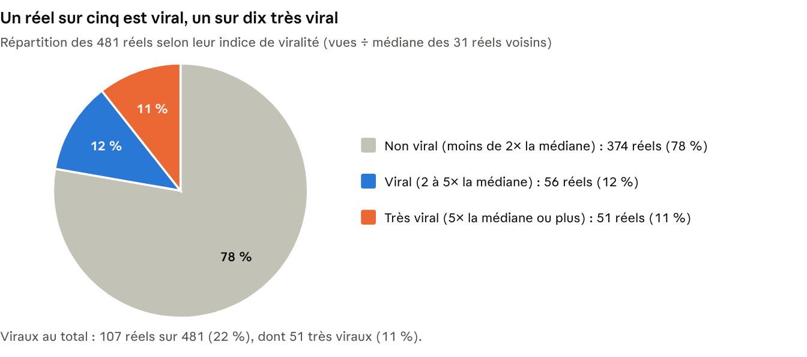
Hypothèse H10Faut-il chercher à faire des réels viraux pour gagner des abonnés ?
Significatif
-
Question de recherche. Un réel viral fait-il gagner plus d'abonnés qu'un réel non viral ?
-
Hypothèse. H0 : un réel viral fait gagner autant d'abonnés qu'un réel non viral. H1 : il n'en fait pas gagner autant. Si p < 0,05, l'écart n'est pas dû au hasard : on rejette H0 et on retient H1.
-
Périmètre. 481 réels publiés du 01/01/2025 au 21/10/2026 : 107 viraux et 374 non viraux. Un réel est viral s'il fait au moins 2 fois plus de vues que les réels publiés autour de lui. Source : reels_base.csv, complété par l'export Instagram du 22/10/2026 pour 32 réels de septembre-octobre 2026.
-
Test choisi. On compare deux groupes séparés (viraux et non viraux) sur un nombre (les abonnés gagnés) : c'est le cas du test t pour échantillons indépendants. Le test de Levene montre que les deux groupes ne sont pas aussi dispersés l'un que l'autre (p < 0,001) : on lit donc la ligne « variances inégales » (Welch). Comme quelques réels énormes tirent la moyenne vers le haut, on vérifie avec un test de Mann-Whitney, qui compare les rangs et n'est pas faussé par ces extrêmes.
-
Calcul de p. Les réels viraux font en moyenne 184 abonnés de plus (191 contre 8). Le hasard seul pourrait créer un écart d'environ 42 abonnés. L'écart observé est donc 4,4 fois plus grand que le hasard (t = 4,37). La probabilité d'obtenir un tel écart par hasard est p = 0,00003, soit 3 chances sur 100 000.
-
Significativité. La règle : si p est sous 0,05 (moins de 5 % de risque que ce soit le hasard), le résultat est significatif. Ici p = 0,00003, bien en dessous : le résultat est significatif, l'écart n'est pas dû au hasard.
-
Le résultat. En moyenne, un réel viral fait gagner 191 abonnés, contre 8 pour un réel non viral (t = 4,37 ; ddl = 106 ; p < 0,001) : l'écart n'est pas dû au hasard. Pour un réel typique (médiane), c'est 53 contre 4, soit environ 50 abonnés de plus par réel (IC 95 % : +32 à +66). Mann-Whitney confirme (p < 0,001). Verdict : on rejette H0, les réels viraux font gagner plus d'abonnés.
-
Interprétation. En clair, ce ne sont pas tous les réels qui font grandir le compte, ce sont les réels viraux. Ils ne représentent qu'un réel sur cinq, mais ils ramènent presque 9 abonnés sur 10. Un réel viral, c'est une cinquantaine d'abonnés ; un réel classique, à peine quatre.
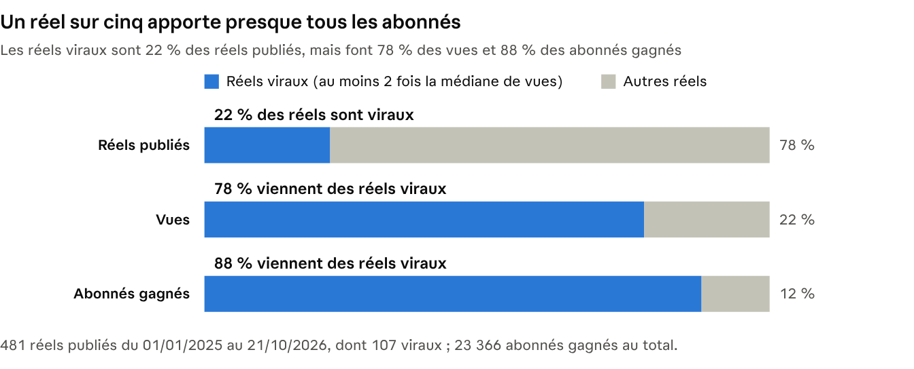
Hypothèse H11Les réels viraux engagent-ils plus leur audience ?
Significatif, sens inverse
-
Question de recherche. Un réel viral fait-il plus réagir les comptes qu'il touche (taux d'engagement) qu'un réel non viral ?
-
Hypothèse. H0 : un réel viral a le même taux d'engagement qu'un réel non viral. H1 : il n'a pas le même. Si p < 0,05, l'écart n'est pas dû au hasard : on rejette H0 et on retient H1.
-
Périmètre. 481 réels publiés du 01/01/2025 au 21/10/2026 : 107 viraux et 374 non viraux. Le taux d'engagement = (j'aime + commentaires + partages + enregistrements) ÷ comptes touchés × 100. Source : reels_base.csv, complété par l'export Instagram du 22/10/2026 pour 32 réels de septembre-octobre 2026.
-
Test choisi. On compare deux groupes séparés (viraux et non viraux) sur un nombre (le taux d'engagement) : c'est le cas du test t pour échantillons indépendants. Le test de Levene montre que les deux groupes ne sont pas aussi dispersés l'un que l'autre (p < 0,001) : on lit donc la ligne « variances inégales » (Welch). Comme quelques réels très forts tirent la moyenne, on vérifie avec un test de Mann-Whitney, qui compare les rangs et n'est pas faussé par ces extrêmes.
-
Calcul de p. Les réels viraux ont en moyenne un taux d'engagement plus bas de 0,59 point (3,32 % contre 3,91 %). Le hasard seul pourrait créer un écart d'environ 0,26 point. L'écart observé est donc 2,3 fois plus grand que le hasard (t = −2,28). La probabilité d'obtenir un tel écart par hasard est p = 0,024, soit environ 2 chances sur 100.
-
Significativité. La règle : si p est sous 0,05 (moins de 5 % de risque que ce soit le hasard), le résultat est significatif. Ici p = 0,024, en dessous : le résultat est significatif, l'écart n'est pas dû au hasard.
-
Le résultat. En moyenne, un réel viral a un taux d'engagement de 3,32 %, contre 3,91 % pour un réel non viral. Verdict : on rejette H0, mais dans le sens inverse de l'intuition : les réels viraux engagent moins.
-
Interprétation. En clair, un réel viral fait moins réagir : sur 100 comptes, environ 3 réagissent, contre 4 pour un réel classique. C'est logique : un réel viral sort de la communauté et touche surtout des inconnus, qui likent et commentent moins. Mais en nombre, il fait bien plus d'interactions : environ 1 300 contre 280. Autrement dit, la viralité apporte du volume, pas un meilleur taux.
-
Décision. Le résultat confirme une règle connue des réseaux sociaux : la viralité est un levier de visibilité, pas d'engagement. Un réel viral sert à aller chercher de nouveaux abonnés ; il ne suffit pas à créer une relation avec eux. La stratégie doit donc fonctionner en deux temps : attirer avec des réels pensés pour la portée, puis engager la communauté gagnée avec des contenus de proximité (stories, réponses aux commentaires, coulisses, questions à l'audience).
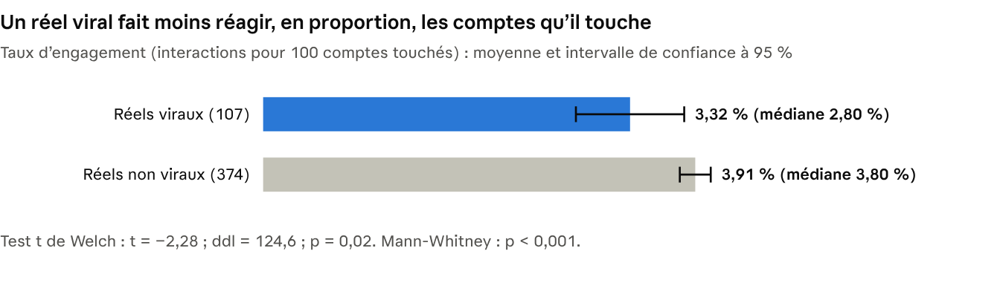
Construction du réel (en amont)
Hypothèse H12Est-ce que certains thèmes abordés dans les réels améliorent les performances du réel ?
Selon le thème
Question de recherche. Sur les 359 réels où elle parle, le thème principal du réel est-il associé à une différence de portée, de viralité, de taux d'engagement, de j'aime, de commentaires, de partages, d'enregistrements ou d'abonnés gagnés ?
Méthode commune aux 10 thèmes
-
Périmètre. Sur les 481 réels, elle parle dans 359 (à l'écran ou en voix off). Les 122 réels sans parole sont exclus : on ne peut pas savoir de quoi ils parlent. Les 10 thèmes ont tous au moins 19 réels, assez pour comparer : on garde donc les 359 réels.
-
Une question par thème, 8 critères. Pour chaque thème, on compare ses réels à tous les autres réels où elle parle, sur 8 critères : portée (nombre de comptes touchés), viralité (part de réels viraux), taux d'engagement (capacité à susciter des interactions), j'aime, commentaires, partages, enregistrements et abonnés gagnés.
-
Quelle viralité. La même que dans tout le dossier : un réel est viral s'il fait au moins 2 fois les vues médianes des réels publiés autour de lui. Cela neutralise la croissance du compte : chaque réel est jugé par rapport à ses voisins. Sur les 359 réels où elle parle, 22 % sont viraux.
-
Pourquoi Mann-Whitney. Pour les 7 critères chiffrés, on compare deux groupes séparés (le thème contre les autres), de tailles très différentes. Quelques réels très viraux tirent les moyennes vers le haut : Mann-Whitney compare les rangs plutôt que les moyennes, il n'est donc pas faussé par ces extrêmes.
-
Pourquoi Fisher pour la viralité. Viral oui / non n'est pas un nombre mais une catégorie : on compare deux pourcentages dans un tableau 2 × 2. Avec de petits groupes, le test exact de Fisher est plus fiable que le khi².
-
Pourquoi corriger les p. 10 thèmes × 8 critères = 80 tests. À 5 % de risque chacun, on aurait environ 4 « faux résultats » par simple hasard. La correction de Benjamini-Hochberg relève la barre pour éviter ces faux positifs : c'est la colonne « p corrigée » des tableaux. Un écart est significatif si sa p corrigée est sous 0,05 ; une tendance si seule la p brute l'est.
Thème 1 — Vie familiale
-
Question de recherche. Parler de sa vie familiale améliore-t-il les performances du réel ?
-
Hypothèse. H0 : les réels vie familiale performent comme les autres réels où elle parle, sur les 8 critères. H1 : ils performent différemment sur au moins un critère. Si la p corrigée est sous 0,05, l'écart n'est pas dû au hasard : on rejette H0.
-
Périmètre. Les 359 réels où elle parle, publiés du 01/01/2025 au 21/10/2026 : 86 réels vie familiale, 273 autres.
-
Test choisi. On compare deux groupes séparés (les réels vie familiale contre tous les autres). Sur les 7 critères chiffrés, quelques réels très viraux faussent les moyennes : on utilise Mann-Whitney, qui compare les rangs. La viralité est un oui / non : on compare deux pourcentages avec le test exact de Fisher. Comme on fait 80 tests (10 thèmes × 8 critères), on corrige les p (Benjamini-Hochberg).
-
Calcul de p. Pour chaque critère chiffré, Mann-Whitney range les 359 réels du plus faible au plus fort et regarde si les réels vie familiale se retrouvent plus souvent en haut (ou en bas) du classement que si le thème ne jouait aucun rôle. Pour la viralité, le test exact de Fisher compare la part de réels viraux. p est la probabilité d'obtenir un tel décalage par simple hasard. L'écart le plus net porte sur les abonnés gagnés : p = 0,004. Comme on fait 80 tests, on corrige : p corrigée = 0,03.
-
Significativité. La règle : si la p corrigée est sous 0,05, le résultat est significatif. Ici, les enregistrements (0,04) et les abonnés gagnés (0,03) passent sous le seuil : significatif. Les autres critères restent au-dessus : pas de différence prouvée. Tendance non confirmée après correction : les j'aime.
-
Le résultat. Écarts prouvés : Enregistrements : 8,5 contre 13 (−35 %) ; Abonnés gagnés : 5 contre 9 (−44 %). Verdict : on rejette H0 pour les enregistrements et les abonnés gagnés.
| Critère | Vie familiale (médiane) | Autres réels (médiane) | Écart | p | p corrigée | Verdict |
|---|---|---|---|---|---|---|
| Portée | 8 992 | 10 113 | −11 % | 0,35 | 0,64 | Non |
| Viralité (part de réels viraux) | 21 % | 23 % | −11 % | 0,66 | 0,81 | Non |
| Taux d'engagement | 3,65 % | 3,9 % | −6 % | 0,05 | 0,22 | Non |
| J'aime | 280 | 339 | −18 % | 0,04 | 0,16 | Tendance |
| Commentaires | 22 | 26 | −17 % | 0,27 | 0,56 | Non |
| Partages | 3 | 2 | +50 % | 0,59 | 0,76 | Non |
| Enregistrements | 8,5 | 13 | −35 % | 0,005 | 0,04 | Significatif |
| Abonnés gagnés | 5 | 9 | −44 % | 0,004 | 0,03 | Significatif |
- Interprétation. La vie familiale fait aussi bien que les autres réels sur la portée, la viralité, le taux d'engagement, les commentaires et les partages : c'est un contenu qui plaît, qui crée de la proximité et qui fait partie de l'identité du compte. Son rôle est surtout de fidéliser la communauté existante. Pour recruter de nouveaux abonnés, il pèse un peu moins : on garde moins souvent ces réels en enregistrement, et ils font gagner un peu moins d'abonnés (5 contre 9 en médiane).
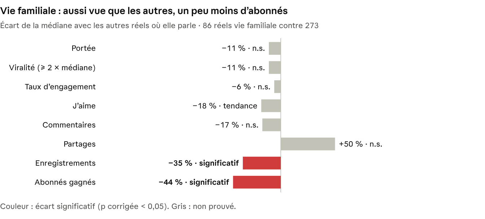
Thème 2 — Anecdotes clients
-
Question de recherche. Raconter des anecdotes clients améliore-t-il les performances du réel ?
-
Hypothèse. H0 : les réels anecdotes clients performent comme les autres réels où elle parle, sur les 8 critères. H1 : ils performent différemment sur au moins un critère. Si la p corrigée est sous 0,05, l'écart n'est pas dû au hasard : on rejette H0.
-
Périmètre. Les 359 réels où elle parle, publiés du 01/01/2025 au 21/10/2026 : 42 réels anecdotes clients, 317 autres.
-
Test choisi. On compare deux groupes séparés (les réels anecdotes clients contre tous les autres). Sur les 7 critères chiffrés, quelques réels très viraux faussent les moyennes : on utilise Mann-Whitney, qui compare les rangs. La viralité est un oui / non : on compare deux pourcentages avec le test exact de Fisher. Comme on fait 80 tests (10 thèmes × 8 critères), on corrige les p (Benjamini-Hochberg).
-
Calcul de p. Pour chaque critère chiffré, Mann-Whitney range les 359 réels du plus faible au plus fort et regarde si les réels anecdotes clients se retrouvent plus souvent en haut (ou en bas) du classement que si le thème ne jouait aucun rôle. Pour la viralité, le test exact de Fisher compare la part de réels viraux. p est la probabilité d'obtenir un tel décalage par simple hasard. L'écart le plus net porte sur la viralité : p = 0,12. Comme on fait 80 tests, on corrige : p corrigée = 0,36.
-
Significativité. La règle : si la p corrigée est sous 0,05, le résultat est significatif. Ici, aucune p corrigée ne passe sous le seuil (la plus basse vaut 0,36) : non significatif, les écarts observés peuvent venir du hasard.
-
Le résultat. Aucun écart ne tient après correction. Verdict : on ne rejette pas H0, aucun écart prouvé.
| Critère | Anecdotes clients (médiane) | Autres réels (médiane) | Écart | p | p corrigée | Verdict |
|---|---|---|---|---|---|---|
| Portée | 11 200 | 9 820 | +14 % | 0,44 | 0,69 | Non |
| Viralité (part de réels viraux) | 33 % | 21 % | +55 % | 0,12 | 0,36 | Non |
| Taux d'engagement | 4,1 % | 3,8 % | +8 % | 0,24 | 0,54 | Non |
| J'aime | 342 | 315 | +9 % | 0,21 | 0,51 | Non |
| Commentaires | 27 | 25 | +8 % | 0,89 | 0,93 | Non |
| Partages | 2 | 2 | +0 % | 0,52 | 0,75 | Non |
| Enregistrements | 13 | 12 | +8 % | 0,21 | 0,51 | Non |
| Abonnés gagnés | 9,5 | 7 | +36 % | 0,21 | 0,51 | Non |
- Interprétation. En clair, les histoires de clientes font comme les autres réels sur les 8 critères : aucun écart prouvé.
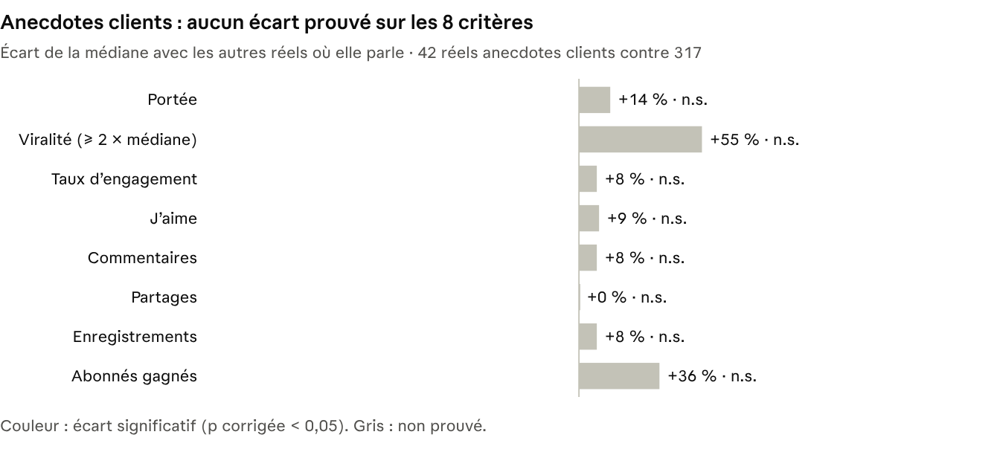
Thème 3 — Vie d'entrepreneur
-
Question de recherche. Parler de sa vie d'entrepreneur améliore-t-il les performances du réel ?
-
Hypothèse. H0 : les réels vie d'entrepreneur performent comme les autres réels où elle parle, sur les 8 critères. H1 : ils performent différemment sur au moins un critère. Si la p corrigée est sous 0,05, l'écart n'est pas dû au hasard : on rejette H0.
-
Périmètre. Les 359 réels où elle parle, publiés du 01/01/2025 au 21/10/2026 : 40 réels vie d'entrepreneur, 319 autres.
-
Test choisi. On compare deux groupes séparés (les réels vie d'entrepreneur contre tous les autres). Sur les 7 critères chiffrés, quelques réels très viraux faussent les moyennes : on utilise Mann-Whitney, qui compare les rangs. La viralité est un oui / non : on compare deux pourcentages avec le test exact de Fisher. Comme on fait 80 tests (10 thèmes × 8 critères), on corrige les p (Benjamini-Hochberg).
-
Calcul de p. Pour chaque critère chiffré, Mann-Whitney range les 359 réels du plus faible au plus fort et regarde si les réels vie d'entrepreneur se retrouvent plus souvent en haut (ou en bas) du classement que si le thème ne jouait aucun rôle. Pour la viralité, le test exact de Fisher compare la part de réels viraux. p est la probabilité d'obtenir un tel décalage par simple hasard. L'écart le plus net porte sur les abonnés gagnés : p = 0,007. Comme on fait 80 tests, on corrige : p corrigée = 0,045.
-
Significativité. La règle : si la p corrigée est sous 0,05, le résultat est significatif. Ici, les abonnés gagnés (0,045) passent sous le seuil : significatif. Les autres critères restent au-dessus : pas de différence prouvée. Tendance non confirmée après correction : les j'aime.
-
Le résultat. Écart prouvé : Abonnés gagnés : 15 contre 7 (+114 %). Verdict : on rejette H0 pour les abonnés gagnés.
| Critère | Vie d'entrepreneur (médiane) | Autres réels (médiane) | Écart | p | p corrigée | Verdict |
|---|---|---|---|---|---|---|
| Portée | 11 650 | 9 685 | +20 % | 0,09 | 0,29 | Non |
| Viralité (part de réels viraux) | 32 % | 22 % | +50 % | 0,16 | 0,46 | Non |
| Taux d'engagement | 3,95 % | 3,8 % | +4 % | 0,76 | 0,85 | Non |
| J'aime | 470 | 310 | +52 % | 0,04 | 0,16 | Tendance |
| Commentaires | 25 | 25 | +0 % | 0,58 | 0,76 | Non |
| Partages | 2 | 2 | +0 % | 0,22 | 0,51 | Non |
| Enregistrements | 16 | 12 | +33 % | 0,07 | 0,25 | Non |
| Abonnés gagnés | 15 | 7 | +114 % | 0,007 | 0,045 | Significatif |
- Interprétation. En clair, quand elle raconte son quotidien de cheffe d'entreprise, deux fois plus de gens s'abonnent (15 abonnés en médiane contre 7), sans que le réel touche beaucoup plus de monde. C'est le contenu qui transforme le mieux l'audience en abonnés.
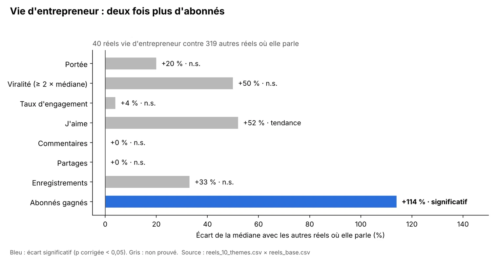
Thème 4 — Humour de situation
-
Question de recherche. Faire de l'humour de situation améliore-t-il les performances du réel ?
-
Hypothèse. H0 : les réels humour de situation performent comme les autres réels où elle parle, sur les 8 critères. H1 : ils performent différemment sur au moins un critère. Si la p corrigée est sous 0,05, l'écart n'est pas dû au hasard : on rejette H0.
-
Périmètre. Les 359 réels où elle parle, publiés du 01/01/2025 au 21/10/2026 : 39 réels humour de situation, 320 autres.
-
Test choisi. On compare deux groupes séparés (les réels humour de situation contre tous les autres). Sur les 7 critères chiffrés, quelques réels très viraux faussent les moyennes : on utilise Mann-Whitney, qui compare les rangs. La viralité est un oui / non : on compare deux pourcentages avec le test exact de Fisher. Comme on fait 80 tests (10 thèmes × 8 critères), on corrige les p (Benjamini-Hochberg).
-
Calcul de p. Pour chaque critère chiffré, Mann-Whitney range les 359 réels du plus faible au plus fort et regarde si les réels humour de situation se retrouvent plus souvent en haut (ou en bas) du classement que si le thème ne jouait aucun rôle. Pour la viralité, le test exact de Fisher compare la part de réels viraux. p est la probabilité d'obtenir un tel décalage par simple hasard. L'écart le plus net porte sur les enregistrements : p = 0,003. Comme on fait 80 tests, on corrige : p corrigée = 0,03.
-
Significativité. La règle : si la p corrigée est sous 0,05, le résultat est significatif. Ici, les enregistrements (0,03) et les abonnés gagnés (0,03) passent sous le seuil : significatif. Les autres critères restent au-dessus : pas de différence prouvée. Tendances non confirmées après correction : la viralité et les j'aime.
-
Le résultat. Écarts prouvés : Enregistrements : 8 contre 13 (−38 %) ; Abonnés gagnés : 5 contre 8 (−38 %). Verdict : on rejette H0 pour les enregistrements et les abonnés gagnés.
| Critère | Humour de situation (médiane) | Autres réels (médiane) | Écart | p | p corrigée | Verdict |
|---|---|---|---|---|---|---|
| Portée | 8 440 | 10 118 | −17 % | 0,06 | 0,24 | Non |
| Viralité (part de réels viraux) | 8 % | 25 % | −69 % | 0,01 | 0,08 | Tendance |
| Taux d'engagement | 3,5 % | 3,8 % | −8 % | 0,22 | 0,51 | Non |
| J'aime | 235 | 335 | −30 % | 0,01 | 0,08 | Tendance |
| Commentaires | 22 | 25 | −12 % | 0,83 | 0,89 | Non |
| Partages | 3 | 2 | +50 % | 0,56 | 0,76 | Non |
| Enregistrements | 8 | 13 | −38 % | 0,003 | 0,03 | Significatif |
| Abonnés gagnés | 5 | 8 | −38 % | 0,004 | 0,03 | Significatif |
- Interprétation. En clair, l'humour fait sourire mais ne laisse pas de trace : moins d'enregistrements et moins d'abonnés (5 contre 8 en médiane). Le public consomme la blague sans retenir la marque.
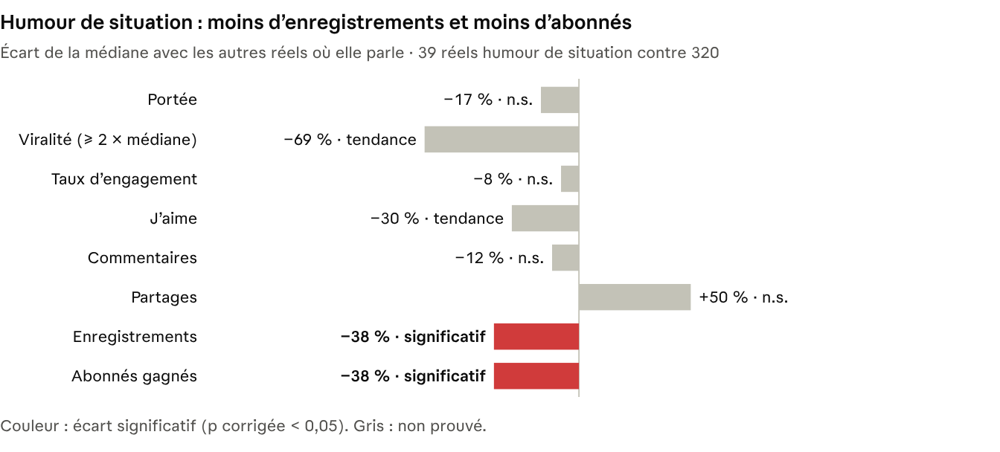
Thème 5 — Réseaux sociaux
-
Question de recherche. Parler des réseaux sociaux et de sa communauté améliore-t-il les performances du réel ?
-
Hypothèse. H0 : les réels réseaux sociaux performent comme les autres réels où elle parle, sur les 8 critères. H1 : ils performent différemment sur au moins un critère. Si la p corrigée est sous 0,05, l'écart n'est pas dû au hasard : on rejette H0.
-
Périmètre. Les 359 réels où elle parle, publiés du 01/01/2025 au 21/10/2026 : 38 réels réseaux sociaux, 321 autres.
-
Test choisi. On compare deux groupes séparés (les réels réseaux sociaux contre tous les autres). Sur les 7 critères chiffrés, quelques réels très viraux faussent les moyennes : on utilise Mann-Whitney, qui compare les rangs. La viralité est un oui / non : on compare deux pourcentages avec le test exact de Fisher. Comme on fait 80 tests (10 thèmes × 8 critères), on corrige les p (Benjamini-Hochberg).
-
Calcul de p. Pour chaque critère chiffré, Mann-Whitney range les 359 réels du plus faible au plus fort et regarde si les réels réseaux sociaux se retrouvent plus souvent en haut (ou en bas) du classement que si le thème ne jouait aucun rôle. Pour la viralité, le test exact de Fisher compare la part de réels viraux. p est la probabilité d'obtenir un tel décalage par simple hasard. L'écart le plus net porte sur les commentaires : p = 0,004. Comme on fait 80 tests, on corrige : p corrigée = 0,03.
-
Significativité. La règle : si la p corrigée est sous 0,05, le résultat est significatif. Ici, les commentaires (0,03) passent sous le seuil : significatif. Les autres critères restent au-dessus : pas de différence prouvée.
-
Le résultat. Écart prouvé : Commentaires : 43 contre 24 (+79 %). Verdict : on rejette H0 pour les commentaires.
| Critère | Réseaux sociaux (médiane) | Autres réels (médiane) | Écart | p | p corrigée | Verdict |
|---|---|---|---|---|---|---|
| Portée | 8 715 | 9 930 | −12 % | 0,34 | 0,64 | Non |
| Viralité (part de réels viraux) | 11 % | 24 % | −57 % | 0,07 | 0,24 | Non |
| Taux d'engagement | 4,15 % | 3,7 % | +12 % | 0,22 | 0,51 | Non |
| J'aime | 296 | 325 | −9 % | 0,50 | 0,74 | Non |
| Commentaires | 43 | 24 | +79 % | 0,004 | 0,03 | Significatif |
| Partages | 1 | 2 | −50 % | 0,08 | 0,26 | Non |
| Enregistrements | 12 | 12 | −4 % | 0,28 | 0,56 | Non |
| Abonnés gagnés | 12 | 7 | +64 % | 0,17 | 0,47 | Non |
- Interprétation. En clair, parler de son compte et de sa communauté (concours, critiques, remerciements) fait réagir : presque deux fois plus de commentaires (43 contre 24 en médiane). C'est le thème qui ouvre le plus la conversation.
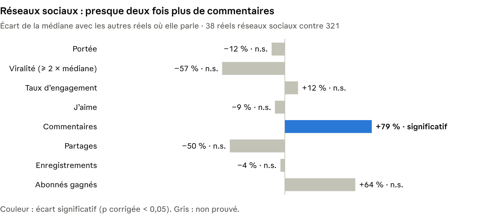
Thème 6 — Coulisses
-
Question de recherche. Montrer les coulisses de l'atelier améliore-t-il les performances du réel ?
-
Hypothèse. H0 : les réels coulisses performent comme les autres réels où elle parle, sur les 8 critères. H1 : ils performent différemment sur au moins un critère. Si la p corrigée est sous 0,05, l'écart n'est pas dû au hasard : on rejette H0.
-
Périmètre. Les 359 réels où elle parle, publiés du 01/01/2025 au 21/10/2026 : 27 réels coulisses, 332 autres.
-
Test choisi. On compare deux groupes séparés (les réels coulisses contre tous les autres). Sur les 7 critères chiffrés, quelques réels très viraux faussent les moyennes : on utilise Mann-Whitney, qui compare les rangs. La viralité est un oui / non : on compare deux pourcentages avec le test exact de Fisher. Comme on fait 80 tests (10 thèmes × 8 critères), on corrige les p (Benjamini-Hochberg).
-
Calcul de p. Pour chaque critère chiffré, Mann-Whitney range les 359 réels du plus faible au plus fort et regarde si les réels coulisses se retrouvent plus souvent en haut (ou en bas) du classement que si le thème ne jouait aucun rôle. Pour la viralité, le test exact de Fisher compare la part de réels viraux. p est la probabilité d'obtenir un tel décalage par simple hasard. L'écart le plus net porte sur les commentaires : p = 0,03. Comme on fait 80 tests, on corrige : p corrigée = 0,15.
-
Significativité. La règle : si la p corrigée est sous 0,05, le résultat est significatif. Ici, aucune p corrigée ne passe sous le seuil (la plus basse vaut 0,15) : non significatif, les écarts observés peuvent venir du hasard. Tendance non confirmée après correction : les commentaires.
-
Le résultat. Aucun écart ne tient après correction. Verdict : on ne rejette pas H0, aucun écart prouvé.
| Critère | Coulisses (médiane) | Autres réels (médiane) | Écart | p | p corrigée | Verdict |
|---|---|---|---|---|---|---|
| Portée | 7 130 | 9 910 | −28 % | 0,14 | 0,42 | Non |
| Viralité (part de réels viraux) | 26 % | 23 % | +15 % | 0,64 | 0,80 | Non |
| Taux d'engagement | 4,1 % | 3,8 % | +8 % | 0,55 | 0,75 | Non |
| J'aime | 287 | 322 | −11 % | 0,48 | 0,72 | Non |
| Commentaires | 18 | 26 | −31 % | 0,03 | 0,15 | Tendance |
| Partages | 1 | 2 | −50 % | 0,27 | 0,56 | Non |
| Enregistrements | 12 | 12 | +0 % | 0,54 | 0,75 | Non |
| Abonnés gagnés | 5 | 8 | −38 % | 0,55 | 0,75 | Non |
- Interprétation. En clair, montrer la fabrication ne change rien de prouvé : un peu moins de commentaires, mais l'écart ne tient pas après correction, avec 27 réels seulement.
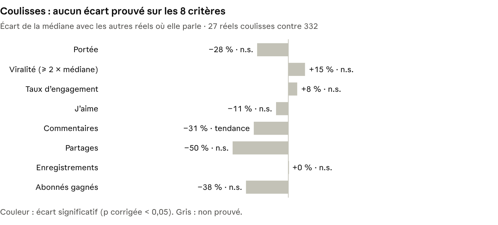
Thème 7 — Présentation des produits
-
Question de recherche. Présenter les produits améliore-t-il les performances du réel ?
-
Hypothèse. H0 : les réels présentation des produits performent comme les autres réels où elle parle, sur les 8 critères. H1 : ils performent différemment sur au moins un critère. Si la p corrigée est sous 0,05, l'écart n'est pas dû au hasard : on rejette H0.
-
Périmètre. Les 359 réels où elle parle, publiés du 01/01/2025 au 21/10/2026 : 25 réels présentation des produits, 334 autres.
-
Test choisi. On compare deux groupes séparés (les réels présentation des produits contre tous les autres). Sur les 7 critères chiffrés, quelques réels très viraux faussent les moyennes : on utilise Mann-Whitney, qui compare les rangs. La viralité est un oui / non : on compare deux pourcentages avec le test exact de Fisher. Comme on fait 80 tests (10 thèmes × 8 critères), on corrige les p (Benjamini-Hochberg).
-
Calcul de p. Pour chaque critère chiffré, Mann-Whitney range les 359 réels du plus faible au plus fort et regarde si les réels présentation des produits se retrouvent plus souvent en haut (ou en bas) du classement que si le thème ne jouait aucun rôle. Pour la viralité, le test exact de Fisher compare la part de réels viraux. p est la probabilité d'obtenir un tel décalage par simple hasard. L'écart le plus net porte sur les enregistrements : p = 0,35. Comme on fait 80 tests, on corrige : p corrigée = 0,64.
-
Significativité. La règle : si la p corrigée est sous 0,05, le résultat est significatif. Ici, aucune p corrigée ne passe sous le seuil (la plus basse vaut 0,64) : non significatif, les écarts observés peuvent venir du hasard.
-
Le résultat. Aucun écart ne tient après correction. Verdict : on ne rejette pas H0, aucun écart prouvé.
| Critère | Présentation des produits (médiane) | Autres réels (médiane) | Écart | p | p corrigée | Verdict |
|---|---|---|---|---|---|---|
| Portée | 11 306 | 9 832 | +15 % | 0,90 | 0,93 | Non |
| Viralité (part de réels viraux) | 28 % | 22 % | +25 % | 0,62 | 0,79 | Non |
| Taux d'engagement | 3,5 % | 3,8 % | −8 % | 0,39 | 0,67 | Non |
| J'aime | 310 | 322 | −4 % | 0,72 | 0,85 | Non |
| Commentaires | 23 | 25 | −8 % | 0,84 | 0,90 | Non |
| Partages | 2 | 2 | +0 % | 0,83 | 0,89 | Non |
| Enregistrements | 17 | 12 | +42 % | 0,35 | 0,64 | Non |
| Abonnés gagnés | 7 | 8 | −12 % | 0,99 | 1,00 | Non |
- Interprétation. En clair, présenter les bougies ne change rien aux performances : ces réels font comme les autres sur les 8 critères.
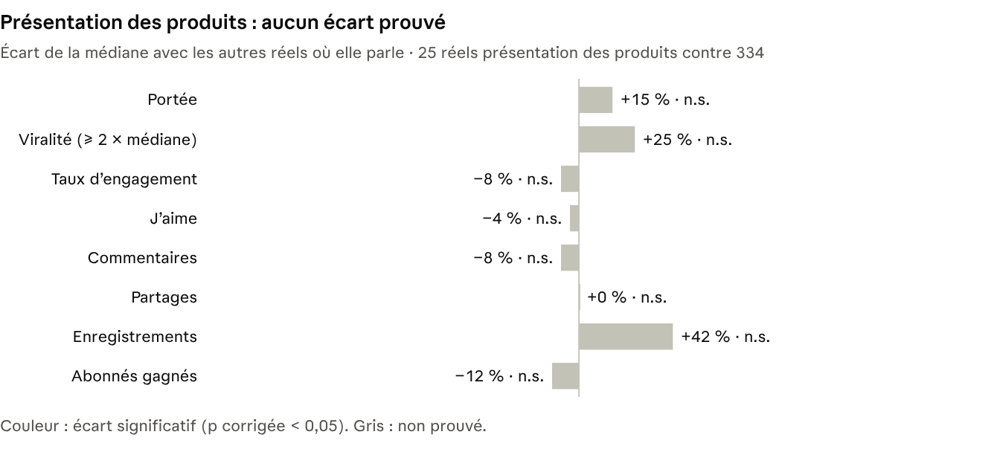
Thème 8 — Prix juste
-
Question de recherche. Parler du prix juste et de la valeur du travail améliore-t-il les performances du réel ?
-
Hypothèse. H0 : les réels prix juste performent comme les autres réels où elle parle, sur les 8 critères. H1 : ils performent différemment sur au moins un critère. Si la p corrigée est sous 0,05, l'écart n'est pas dû au hasard : on rejette H0.
-
Périmètre. Les 359 réels où elle parle, publiés du 01/01/2025 au 21/10/2026 : 21 réels prix juste, 338 autres.
-
Test choisi. On compare deux groupes séparés (les réels prix juste contre tous les autres). Sur les 7 critères chiffrés, quelques réels très viraux faussent les moyennes : on utilise Mann-Whitney, qui compare les rangs. La viralité est un oui / non : on compare deux pourcentages avec le test exact de Fisher. Comme on fait 80 tests (10 thèmes × 8 critères), on corrige les p (Benjamini-Hochberg).
-
Calcul de p. Pour chaque critère chiffré, Mann-Whitney range les 359 réels du plus faible au plus fort et regarde si les réels prix juste se retrouvent plus souvent en haut (ou en bas) du classement que si le thème ne jouait aucun rôle. Pour la viralité, le test exact de Fisher compare la part de réels viraux. p est la probabilité d'obtenir un tel décalage par simple hasard. L'écart le plus net porte sur les enregistrements : p < 0,001, soit moins d’une chance sur 1 000. Comme on fait 80 tests, on corrige : p corrigée < 0,001.
-
Significativité. La règle : si la p corrigée est sous 0,05, le résultat est significatif. Ici, la portée (0,004), la viralité (0,03), les j'aime (< 0,001), les commentaires (0,004), les partages (0,03), les enregistrements (< 0,001) et les abonnés gagnés (< 0,001) passent sous le seuil : significatif. Le taux d'engagement reste au-dessus : pas de différence prouvée.
-
Le résultat. Écarts prouvés : Portée : 33 117 contre 9 663 (+243 %) ; Viralité : 52 % contre 21 % (+149 %) ; J'aime : 1 351 contre 310 (+337 %) ; Commentaires : 64 contre 25 (+156 %) ; Partages : 5 contre 2 (+150 %) ; Enregistrements : 37 contre 12 (+208 %) ; Abonnés gagnés : 57 contre 7 (+714 %). Verdict : on rejette H0 pour la portée, la viralité, les j'aime, les commentaires, les partages, les enregistrements et les abonnés gagnés.
| Critère | Prix juste (médiane) | Autres réels (médiane) | Écart | p | p corrigée | Verdict |
|---|---|---|---|---|---|---|
| Portée | 33 117 | 9 663 | +243 % | < 0,001 | 0,004 | Significatif |
| Viralité (part de réels viraux) | 52 % | 21 % | +149 % | 0,002 | 0,03 | Significatif |
| Taux d'engagement | 4,5 % | 3,8 % | +18 % | 0,06 | 0,24 | Non |
| J'aime | 1 351 | 310 | +337 % | < 0,001 | < 0,001 | Significatif |
| Commentaires | 64 | 25 | +156 % | < 0,001 | 0,004 | Significatif |
| Partages | 5 | 2 | +150 % | 0,002 | 0,03 | Significatif |
| Enregistrements | 37 | 12 | +208 % | < 0,001 | < 0,001 | Significatif |
| Abonnés gagnés | 57 | 7 | +714 % | < 0,001 | < 0,001 | Significatif |
- Interprétation. C'est de loin le thème le plus fort : quand elle explique pourquoi une bougie artisanale coûte ce prix, le réel touche 3 fois plus de comptes, récolte 4 fois plus de j'aime, 3 fois plus d'enregistrements et 8 fois plus d'abonnés. Plus d'un réel sur deux devient viral (52 % contre 21 %). Le sujet touche, fait débattre et donne une raison de suivre la marque.
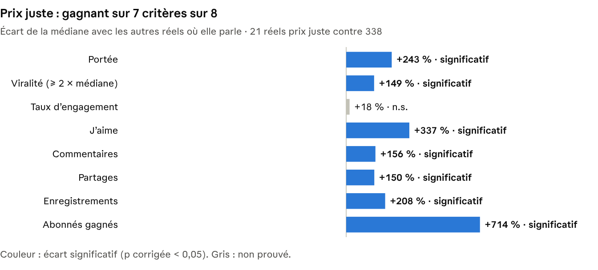
reels_10_themes.csv × reels_base.csv · 21 réels prix juste contre 338
Thème 9 — Valeurs et société
-
Question de recherche. Parler de ses valeurs et de sujets de société améliore-t-il les performances du réel ?
-
Hypothèse. H0 : les réels valeurs et société performent comme les autres réels où elle parle, sur les 8 critères. H1 : ils performent différemment sur au moins un critère. Si la p corrigée est sous 0,05, l'écart n'est pas dû au hasard : on rejette H0.
-
Périmètre. Les 359 réels où elle parle, publiés du 01/01/2025 au 21/10/2026 : 22 réels valeurs et société, 337 autres.
-
Test choisi. On compare deux groupes séparés (les réels valeurs et société contre tous les autres). Sur les 7 critères chiffrés, quelques réels très viraux faussent les moyennes : on utilise Mann-Whitney, qui compare les rangs. La viralité est un oui / non : on compare deux pourcentages avec le test exact de Fisher. Comme on fait 80 tests (10 thèmes × 8 critères), on corrige les p (Benjamini-Hochberg).
-
Calcul de p. Pour chaque critère chiffré, Mann-Whitney range les 359 réels du plus faible au plus fort et regarde si les réels valeurs et société se retrouvent plus souvent en haut (ou en bas) du classement que si le thème ne jouait aucun rôle. Pour la viralité, le test exact de Fisher compare la part de réels viraux. p est la probabilité d'obtenir un tel décalage par simple hasard. L'écart le plus net porte sur les commentaires : p = 0,31. Comme on fait 80 tests, on corrige : p corrigée = 0,60.
-
Significativité. La règle : si la p corrigée est sous 0,05, le résultat est significatif. Ici, aucune p corrigée ne passe sous le seuil (la plus basse vaut 0,60) : non significatif, les écarts observés peuvent venir du hasard.
-
Le résultat. Aucun écart ne tient après correction. Verdict : on ne rejette pas H0, aucun écart prouvé.
| Critère | Valeurs et société (médiane) | Autres réels (médiane) | Écart | p | p corrigée | Verdict |
|---|---|---|---|---|---|---|
| Portée | 10 080 | 9 845 | +2 % | 0,74 | 0,85 | Non |
| Viralité (part de réels viraux) | 14 % | 23 % | −42 % | 0,43 | 0,69 | Non |
| Taux d'engagement | 3,65 % | 3,8 % | −4 % | 0,71 | 0,85 | Non |
| J'aime | 344 | 319 | +8 % | 0,73 | 0,85 | Non |
| Commentaires | 18 | 25 | −26 % | 0,31 | 0,60 | Non |
| Partages | 3 | 2 | +50 % | 0,47 | 0,72 | Non |
| Enregistrements | 14 | 12 | +21 % | 0,42 | 0,68 | Non |
| Abonnés gagnés | 8 | 8 | +0 % | 0,39 | 0,67 | Non |
- Interprétation. En clair, parler de ses valeurs ne change rien de prouvé, avec 22 réels.
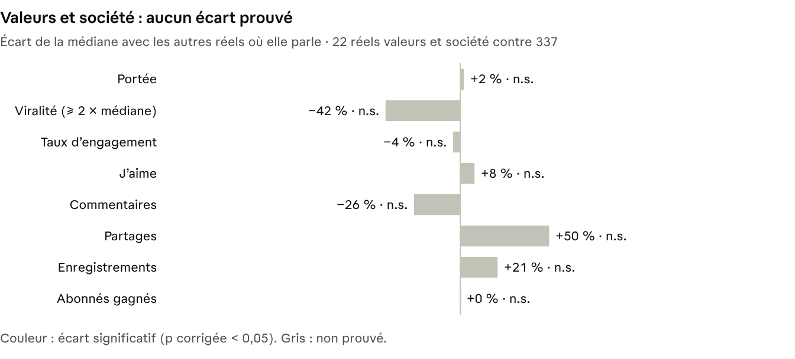
Thème 10 — Lancements et fêtes
-
Question de recherche. Parler des lancements et des fêtes améliore-t-il les performances du réel ?
-
Hypothèse. H0 : les réels lancements et fêtes performent comme les autres réels où elle parle, sur les 8 critères. H1 : ils performent différemment sur au moins un critère. Si la p corrigée est sous 0,05, l'écart n'est pas dû au hasard : on rejette H0.
-
Périmètre. Les 359 réels où elle parle, publiés du 01/01/2025 au 21/10/2026 : 19 réels lancements et fêtes, 340 autres.
-
Test choisi. On compare deux groupes séparés (les réels lancements et fêtes contre tous les autres). Sur les 7 critères chiffrés, quelques réels très viraux faussent les moyennes : on utilise Mann-Whitney, qui compare les rangs. La viralité est un oui / non : on compare deux pourcentages avec le test exact de Fisher. Comme on fait 80 tests (10 thèmes × 8 critères), on corrige les p (Benjamini-Hochberg).
-
Calcul de p. Pour chaque critère chiffré, Mann-Whitney range les 359 réels du plus faible au plus fort et regarde si les réels lancements et fêtes se retrouvent plus souvent en haut (ou en bas) du classement que si le thème ne jouait aucun rôle. Pour la viralité, le test exact de Fisher compare la part de réels viraux. p est la probabilité d'obtenir un tel décalage par simple hasard. L'écart le plus net porte sur la viralité : p = 0,26. Comme on fait 80 tests, on corrige : p corrigée = 0,56.
-
Significativité. La règle : si la p corrigée est sous 0,05, le résultat est significatif. Ici, aucune p corrigée ne passe sous le seuil (la plus basse vaut 0,56) : non significatif, les écarts observés peuvent venir du hasard.
-
Le résultat. Aucun écart ne tient après correction. Verdict : on ne rejette pas H0, aucun écart prouvé.
| Critère | Lancements et fêtes (médiane) | Autres réels (médiane) | Écart | p | p corrigée | Verdict |
|---|---|---|---|---|---|---|
| Portée | 9 670 | 9 899 | −2 % | 0,80 | 0,89 | Non |
| Viralité (part de réels viraux) | 11 % | 24 % | −55 % | 0,26 | 0,56 | Non |
| Taux d'engagement | 3,9 % | 3,8 % | +3 % | 0,75 | 0,85 | Non |
| J'aime | 340 | 314 | +8 % | 0,58 | 0,76 | Non |
| Commentaires | 27 | 25 | +8 % | 0,37 | 0,65 | Non |
| Partages | 2 | 2 | +0 % | 1,00 | 1,00 | Non |
| Enregistrements | 11 | 12 | −8 % | 0,96 | 0,99 | Non |
| Abonnés gagnés | 8 | 7,5 | +7 % | 0,40 | 0,67 | Non |
- Interprétation. En clair, les réels de lancement et de fêtes font comme les autres : aucun écart prouvé, avec 19 réels.
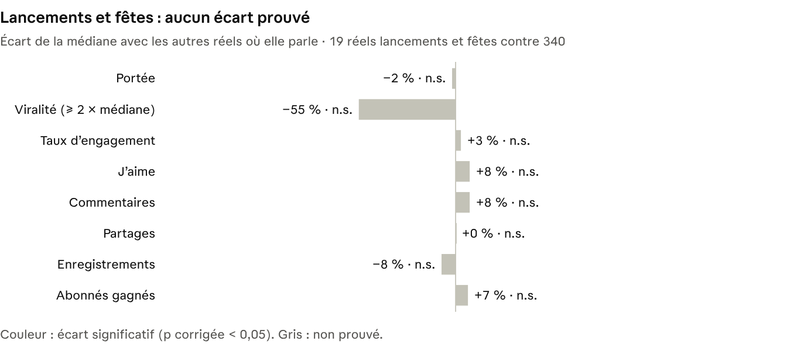
reels_10_themes.csv × reels_base.csv · 19 réels lancements et fêtes contre 340
Synthèse : quels thèmes font performer un réel ?
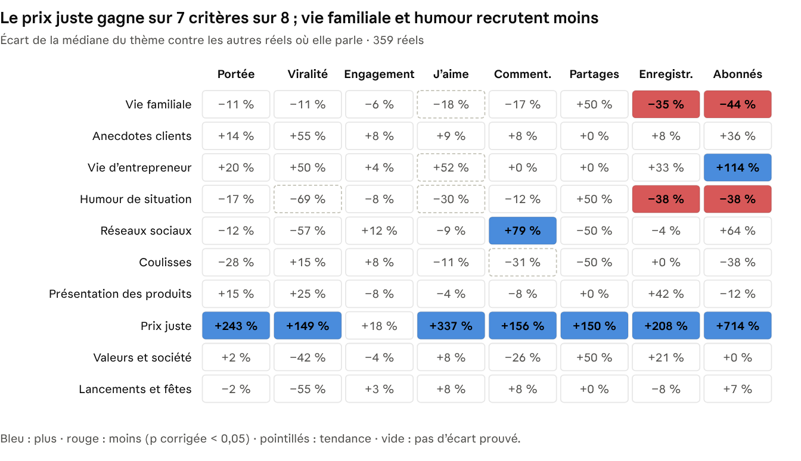
reels_10_themes.csv × reels_base.csv · 359 réels où elle parle, 10 thèmes × 8 critères
- Interprétation. En clair, le thème ne change pas le taux d'engagement : il change le nombre de personnes touchées et ce qu'elles font ensuite. Ce qui fait grandir le compte, c'est quand elle parle de son métier : le prix, son quotidien de cheffe d'entreprise, sa communauté.
Hypothèse H3Voir sa famille à l'image attire-t-il plus que lorsqu'elle est seule ?
Non significatif
-
Question marketing. Voir sa famille à l'image attire-t-il plus que lorsqu'elle est seule ?
-
Question de recherche. Les réels avec son mari ou ses filles à l'écran (n = 78) ont-ils plus de viralité (vues ÷ médiane des 30 réels publiés autour) que les réels où personne d'autre n'est à l'écran (n = 355) ?
-
Hypothèse. H0 : en moyenne, les réels avec son mari ou ses filles à l'écran ont la même viralité que les réels où personne d'autre n'est à l'écran ; la présence de son mari ou de ses filles ne change rien. H1 : en moyenne, les réels avec son mari ou ses filles à l'écran n'ont pas la même viralité que les réels où personne d'autre n'est à l'écran. Si p < 0,05, on rejette H0 et on retient H1.
-
Périmètre. 433 réels publiés du 01/01/2025 au 20/10/2026 : 78 avec sa famille, 355 seule à l'écran. Le critère « famille à l'écran » = la colonne « Qui sont les autres personnes » contient son mari ou l'une de ses filles. Le groupe de comparaison = réels où personne d'autre n'est à l'écran. L'indicateur est la viralité (vues ÷ médiane des 30 réels publiés autour). 1,00 = un réel normal ; 2,00 = deux fois plus de vues que d'habitude. Source : reels_base_completee.xlsx (« BDD Nettoyé » de l'équipe, 487 réels du 01/01/2025 au 21/10/2026). Exclus : 54 réels où seules d'autres personnes (mère, amies, personne inconnue) sont à l'écran.
-
Test choisi. 78 réels avec sa famille contre 355 réels seule à l'écran : deux groupes indépendants et une variable quantitative (viralité, passée au logarithme car très asymétrique : asymétrie = 12,35), donc test t pour échantillons indépendants. Levene : F = 1,94 ; p = 0,164 → variances égales, ligne « variances égales » retenue. Résultat confirmé par le test de Mann-Whitney, car la distribution reste asymétrique après le logarithme (asymétrie = 1,60 ; aplatissement = 2,78) : ce test ne suppose aucune forme de distribution.
-
Le résultat. 0,10 en moyenne pour les réels avec son mari ou ses filles à l'écran contre 0,31 pour les réels où personne d'autre n'est à l'écran, en ln de la viralité, soit 1,11 contre 1,36 à l'échelle d'origine (t = −1,69 ; ddl = 431 ; p = 0,091). En médiane, 0,93 contre 1,02, soit −0,09 (IC 95 % : −0,31 à 0,12) ; Mann-Whitney p = 0,103. Verdict : non significatif, H0 conservée.
Statistiques de groupe (ln de la viralité)
| Mari ou filles à l'écran | N | Moyenne | Écart type | Erreur standard de la moyenne | Médiane |
|---|---|---|---|---|---|
| Oui | 78 | 0,10 | 0,83 | 0,094 | −0,07 |
| Non | 355 | 0,31 | 1,01 | 0,054 | 0,02 |
Test des échantillons indépendants (ln de la viralité)
| Hypothèse | t | ddl | p unilatéral | p bilatéral | Différence moyenne | Erreur standard | IC 95 % inférieur | IC 95 % supérieur |
|---|---|---|---|---|---|---|---|---|
| Hypothèse de variances égales | −1,693 | 431 | 0,046 | 0,091 | −0,208 | 0,123 | −0,448 | 0,033 |
| Hypothèse de variances inégales | −1,921 | 132,43 | 0,028 | 0,057 | −0,208 | 0,108 | −0,421 | 0,006 |
-
Interprétation. Les réels avec son mari ou ses filles à l'écran ont une viralité médiane de 0,93 contre 1,02 pour les réels où personne d'autre n'est à l'écran (1,00 = un réel normal), soit 9 % de moins, mais cet écart reste compatible avec le hasard : on ne peut pas affirmer que la présence de son mari ou de ses filles change la viralité.
-
Décision. Ne pas filmer sa famille au nom des vues : un effet n'est pas démontré. Ce qui la ferait changer : un test refait sur les réels publiés après le 21/10/2026 qui donnerait p < 0,05.
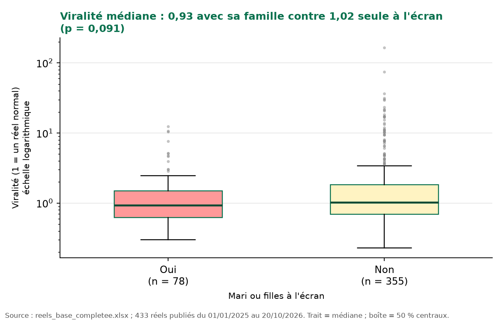
La valeur de p (p = 0,091) est la probabilité d'observer un écart au moins aussi grand que celui-ci si la présence de son mari ou de ses filles ne changeait rien ; sous 0,05, on juge l'écart trop grand pour être dû au hasard.
Ce n'est pas significatif.
Hypothèse H8Un reel où Jessica montre son visage obtient-il plus de vues ?
Significatif, sens inverse
-
Question marketing. Un reel où Jessica montre son visage obtient-il plus de vues ?
-
Question de recherche. Les reels avec un visage en face caméra (n = 215) ont-ils plus de vues relatives que les reels sans (n = 269) ?
-
Hypothèse. H0 : en moyenne, les reels avec un visage en face caméra ont les mêmes vues relatives que les autres ; le visage ne change rien. H1 : en moyenne, ils n'ont pas les mêmes vues relatives. Si p < 0,05, on rejette H0 et on retient H1.
-
Périmètre. 484 reels publiés du 01/01/2025 au 21/10/2026 (3 republications comptées une fois ; aucun reel écarté). Un reel est « avec un visage » s'il est en face caméra, c'est-à-dire si un visage est visible plus de 70 % du temps (colonne « Face caméra »). Presque tous les reels montrent un visage à un moment (seulement 10 n'en montrent aucun) : comparer « un visage » contre « aucun » ne laisserait qu'un groupe trop petit pour un test fiable. Vues relatives = vues ÷ médiane des 30 reels publiés autour (1 = vues habituelles à cette période). Source : reels_base_completee.xlsx.
-
Test choisi. 215 contre 269 : deux groupes indépendants et une variable quantitative (vues relatives), donc test t pour échantillons indépendants, le plus simple. Justification de l'ajout du logarithme : les vues relatives sont très asymétriques (asymétrie = 11,0, quelques reels viraux), si bien que le test t sur les valeurs brutes dit « non significatif » (p = 0,519) alors que Mann-Whitney dit « significatif » (p < 0,001). Le logarithme, transformation simple, ramène l'asymétrie à 1,6 : le test t porte donc sur le logarithme des vues relatives. Levene : F = 3,55 ; p = 0,060 → variances égales, ligne « variances égales » retenue. Résultat confirmé par Mann-Whitney (p < 0,001).
-
Le résultat. 1,10 fois les vues habituelles en moyenne géométrique pour les reels avec un visage en face caméra contre 1,52 pour les autres, soit un rapport de 0,72 (IC 95 % : 0,60 à 0,86) ; t = -3,55 ; ddl = 482 ; p < 0,001. En médiane, 0,86 contre 1,11 (IC 95 % du rapport des médianes : 0,63 à 0,91) ; Mann-Whitney p < 0,001. Verdict : significatif, H1 validée, mais dans le sens inverse de celui attendu : H8 (plus de vues avec un visage) n'est pas confirmée. Valeur de p : p < 0,001 veut dire que, si le visage en face caméra ne changeait rien aux vues, on obtiendrait un écart au moins aussi grand par pur hasard dans moins de 1 cas sur 100 ; comme p est inférieur à 0,05, l'écart est significatif.
Statistiques de groupe (calculées sur le logarithme de la viralité)
| Visage en face caméra | N | Moyenne du log | Écart type | Erreur standard de la moyenne | Médiane du log | Moyenne géométrique (viralité) |
|---|---|---|---|---|---|---|
| Oui | 215 | 0,09 | 0,95 | 0,06 | -0,16 | 1,10 |
| Non | 269 | 0,42 | 1,04 | 0,06 | 0,11 | 1,52 |
Test des échantillons indépendants
| Hypothèse | t | ddl | p unilatéral | p bilatéral | Différence moyenne (log) | Erreur standard | IC 95 % inférieur | IC 95 % supérieur |
|---|---|---|---|---|---|---|---|---|
| Variances égales | -3,55 | 482 | 1,000 | < 0,001 | -0,32 | 0,09 | -0,50 | -0,15 |
| Variances inégales | -3,59 | 473,5 | 1,000 | < 0,001 | -0,32 | 0,09 | -0,50 | -0,15 |
-
Interprétation. Un reel avec un visage en face caméra obtient 0,72 fois les vues d'un reel sans (soit 28 % de moins), contre ce que prédisait H8. Ce test montre un lien, pas une cause : les reels en face caméra ont peut-être d'autres points communs (sujet, parole, durée) qui expliquent l'écart.
-
Décision. Ne pas compter sur le visage en face caméra pour gagner des vues ; varier les formats (produit seul, voix off) et surveiller les vues de ces reels, à partir des prochaines publications. Ce qui la ferait changer : un nouveau test sur les reels à venir donnant p ≥ 0,05, ou un test qui tienne compte du sujet et de la durée.
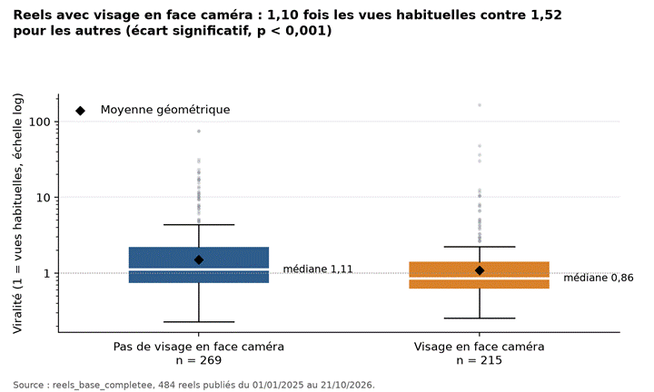
Hypothèse H9Un reel où Jessica montre son visage fait-il plus réagir ?
Non significatif
-
Question marketing. Un reel où Jessica montre son visage fait-il plus réagir ?
-
Question de recherche. Les reels avec un visage en face caméra (n = 215) ont-ils plus d'interactions pour 1 000 comptes touchés que les reels sans (n = 269) ?
-
Hypothèse. H0 : en moyenne, les reels avec un visage en face caméra ont les mêmes interactions pour 1 000 comptes touchés que les autres ; le visage ne change rien. H1 : en moyenne, ils n'ont pas les mêmes interactions. Si p < 0,05, on rejette H0 et on retient H1.
-
Périmètre. 484 reels publiés du 01/01/2025 au 21/10/2026 dont la portée est connue (215 avec un visage en face caméra, 269 sans). Même définition du visage que pour H8 (visage visible plus de 70 % du temps). Interactions = j'aime + commentaires + partages + enregistrements, ramenées à 1 000 comptes touchés pour comparer des reels de portées très différentes. Source : reels_base_completee.xlsx.
-
Test choisi. 215 contre 269 : deux groupes indépendants et une variable quantitative (interactions pour 1 000 comptes touchés), donc test t pour échantillons indépendants, le plus simple. Levene : F = 0,94 ; p = 0,334 → variances égales, ligne « variances égales » retenue. Résultat confirmé par Mann-Whitney (p = 0,576), car la distribution est asymétrique (asymétrie = 2,3) : pas de logarithme nécessaire ici, les deux tests concluent pareil.
-
Le résultat. 37,1 interactions pour 1 000 comptes touchés en moyenne pour les reels avec un visage en face caméra contre 38,3 pour les autres (t = -0,78 ; ddl = 482 ; p = 0,437). En médiane, 34,5 contre 37,1, soit un écart de -2,6 (IC 95 % : -5,6 à 0,9) ; Mann-Whitney p = 0,576. Verdict : non significatif, H0 conservée. Valeur de p : p = 0,437 veut dire que, si le visage ne changeait rien aux interactions, on obtiendrait un écart au moins aussi grand par pur hasard dans environ 44 cas sur 100 ; comme p est supérieur à 0,05, l'écart est non significatif.
Statistiques de groupe
| Visage en face caméra | N | Moyenne | Écart type | Erreur standard de la moyenne | Médiane |
|---|---|---|---|---|---|
| Oui | 215 | 37,08 | 15,17 | 1,03 | 34,54 |
| Non | 269 | 38,32 | 18,97 | 1,16 | 37,11 |
Test des échantillons indépendants
| Hypothèse | t | ddl | p unilatéral | p bilatéral | Différence moyenne | Erreur standard | IC 95 % inférieur | IC 95 % supérieur |
|---|---|---|---|---|---|---|---|---|
| Variances égales | -0,78 | 482 | 0,782 | 0,437 | -1,24 | 1,59 | -4,36 | 1,89 |
| Variances inégales | -0,80 | 482,0 | 0,787 | 0,425 | -1,24 | 1,55 | -4,29 | 1,81 |
-
Interprétation. Les reels avec un visage en face caméra obtiennent environ 37 interactions pour 1 000 comptes touchés, contre 38 pour les autres : la différence est trop petite pour être distinguée du hasard. Ce test montre un lien, pas une cause (le sujet et la parole peuvent jouer).
-
Décision. Ne pas choisir un format pour faire réagir sur la seule présence du visage : elle ne change pas les interactions. Ce qui la ferait changer : un nouveau test sur les reels à venir donnant p < 0,05.
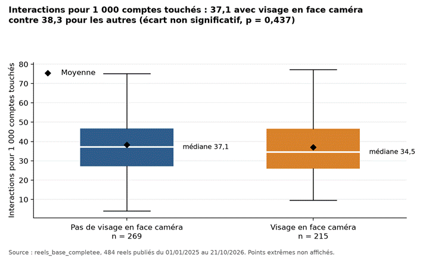
Montage du réel (post-production)
Hypothèse H13Faut-il mettre une musique de fond sur ses réels ?
Significatif
-
Question de recherche. Les réels avec musique de fond (n = 301) obtiennent-ils plus de vues et une viralité plus élevée que les réels sans musique (n = 155) ?
-
Hypothèse. H0 : la musique n'a pas d'effet, les réels avec et sans musique ont les mêmes vues, la même portée et les mêmes réactions. H1 : ils sont différents sur au moins un KPI. Si p < 0,05, l'écart n'est pas dû au hasard : on rejette H0.
-
Périmètre. 481 réels publiés du 01/01/2025 au 21/10/2026 ; 456 retenus : 301 avec musique, 155 sans (25 réels « incertain » ou sans son exclus).
-
Test choisi. On compare deux groupes séparés (avec et sans musique) sur des nombres. Quelques réels très viraux faussent les moyennes : on utilise Mann-Whitney, qui compare les rangs, sur les 9 KPI, puis on corrige les p parce qu'on fait 9 tests. On confirme avec un test t sur le logarithme des vues et un modèle qui compare à format, sujet et durée égaux.
-
Calcul de p. Mann-Whitney range les 456 réels du moins viral au plus viral, puis regarde si les réels avec musique sont plus souvent en haut du classement que si la musique ne jouait aucun rôle. Sur la viralité, le décalage est très net : p < 0,0001, soit moins d'une chance sur 10 000 que ce soit le hasard. Après correction des 9 tests : p corrigée < 0,001.
-
Significativité. La règle : si la p corrigée est sous 0,05, le résultat est significatif. Ici, la viralité et la portée passent très largement sous le seuil (p corrigées < 0,001) : significatif. Les abonnés (0,10), le CA (0,24) et les nouvelles clientes (0,40) restent au-dessus, comme l'engagement, les partages et les enregistrements : pas de différence prouvée.
-
Le résultat. Viralité 1,11 contre 0,74 fois la médiane et portée 1,06 contre 0,80 : +61 % de vues (IC 95 % : +36 % à +91 %), et encore +39 % à format, sujet et durée égaux (p = 0,003). Verdict : on rejette H0, la musique fait voir le réel par plus de monde.
| KPI | Médiane avec musique | Médiane sans musique | p | p corrigée | Verdict |
|---|---|---|---|---|---|
| Viralité (× médiane) | 1,11 | 0,74 | < 0,0001 | < 0,001 | Significatif |
| Portée (× médiane) | 1,06 | 0,80 | < 0,0001 | < 0,001 | Significatif |
| Abonnés gagnés (× médiane) | 1,00 | 0,76 | 0,005 | 0,103 | Fragile |
| Taux d'engagement | 3,40 % | 3,75 % | 0,142 | 0,603 | Non |
| Taux de partage | 0,02 % | 0,02 % | 0,784 | 0,977 | Non |
| Taux d'enregistrement | 0,10 % | 0,10 % | 0,279 | 0,808 | Non |
| Taux d'abonnement | 0,07 % | 0,06 % | 0,669 | 0,888 | Non |
| CA J + lendemain | 333 € | 270 € | 0,024 | 0,241 | Fragile |
| Nouvelles clientes J + lendemain | 3 | 2 | 0,049 | 0,398 | Fragile |
-
Interprétation. En clair, la musique, c'est un coup de pouce de l'algorithme : un réel avec musique est montré à beaucoup plus de monde, environ 60 % de vues en plus. Par contre, les gens qui le voient ne réagissent pas plus : la musique ne rend pas le contenu plus intéressant, elle le rend plus visible. Et c'est surtout vrai quand elle parle : un réel parlé avec musique fait 1,2 fois les vues habituelles, contre 0,7 sans. Concrètement, sur les 86 réels par an publiés sans musique, ça représente environ 380 000 vues gagnées, pour zéro euro.
-
Décision. Concrètement, c'est la décision la plus simple du dossier : mettre systématiquement une musique de fond, en particulier sur les réels où elle parle, soit environ un tiers des réels aujourd'hui.
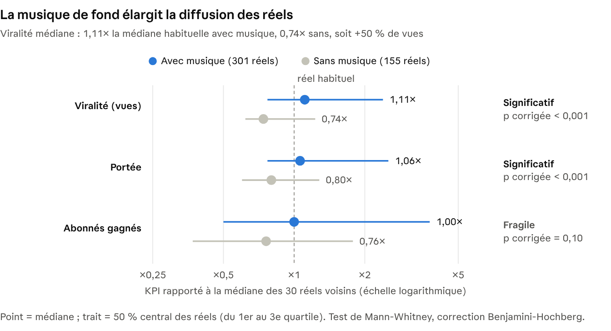
reels_base.csv · 456 réels, janvier 2025 – octobre 2026 (hors réels « incertain » et sans son)
Hypothèse H14Faut-il afficher un texte à l'écran dès l'accroche de chaque réel ?
Significatif
-
Question marketing. Faut-il afficher un texte à l'écran dès l'accroche de chaque réel ?
-
Question de recherche. Les réels qui affichent un texte à l'écran dès les premières secondes (n = 465) obtiennent-ils plus de vues que ceux qui n'en affichent pas (n = 16) ?
-
Hypothèse. H0 : le texte au début n'a pas d'effet, les réels avec et sans texte ont les mêmes vues, la même portée et les mêmes réactions. H1 : ils sont différents sur au moins un KPI. Si p < 0,05, l'écart n'est pas dû au hasard : on rejette H0.
-
Périmètre. 481 réels publiés du 01/01/2025 au 21/10/2026 : 465 avec texte au début, 16 sans.
-
Test choisi. On compare deux groupes séparés, de tailles très inégales, sur des nombres : Mann-Whitney, qui compare les rangs, sur les 9 KPI, avec correction des p. On confirme avec un test t sur le logarithme des vues et un modèle qui compare à musique, coulisses, lumière et appel à l'action égaux.
-
Calcul de p. Mann-Whitney range les 481 réels du moins vu au plus vu, puis regarde si les 16 réels sans texte tombent plus souvent en bas du classement que par hasard. Sur la portée : p = 0,003, soit 3 chances sur 1 000 ; sur la viralité : p = 0,002. Après correction des 9 tests : p corrigées = 0,009 et 0,015.
-
Significativité. La règle : si la p corrigée est sous 0,05, le résultat est significatif. Ici, la portée (0,009) et la viralité (0,015) passent sous le seuil : significatif. Les réactions (engagement, partages, enregistrements) restent au-dessus : pas de différence prouvée.
-
Le résultat. Viralité 1,00 contre 0,65 fois la médiane et portée 1,00 contre 0,66 : +88 % de vues avec texte (IC 95 % : +53 % à +130 %), et encore +73 % à autres critères égaux (p corrigée = 0,001). 23 % de réels viraux avec texte, aucun sans. Verdict : on rejette H0, le texte au début fait voir le réel par plus de monde.
| KPI | Médiane avec texte | Médiane sans texte | p | p corrigée | Verdict |
|---|---|---|---|---|---|
| Viralité (× médiane) | 1,00 | 0,65 | 0,002 | 0,015 | Significatif |
| Portée (× médiane) | 1,00 | 0,66 | 0,003 | 0,009 | Significatif |
| Abonnés gagnés (× médiane) | 1,00 | 0,71 | 0,059 | 0,105 | Non |
| Taux d'engagement | 3,60 % | 3,60 % | 0,548 | 0,548 | Non |
| Taux de partage | 0,02 % | 0,03 % | 0,478 | 0,615 | Non |
| Taux d'enregistrement | 0,10 % | 0,11 % | 0,486 | 0,546 | Non |
| Taux d'abonnement | 0,06 % | 0,05 % | 0,200 | 0,301 | Non |
| CA J + lendemain | 313 € | 550 € | 0,007 | 0,015 | Voir limite |
| Nouvelles clientes J + lendemain | 3 | 6 | 0,002 | 0,007 | Voir limite |
| Confirmation sur la viralité | Résultat | p corrigée |
|---|---|---|
| Test t (logarithme des vues) | +88 % de vues avec texte | < 0,001 |
| À autres critères égaux (musique, coulisses, lumière, appel à l'action) | +73 % de vues avec texte | 0,001 |
| Part de réels viraux (au moins 2 fois la médiane) | 23 % avec texte, 0 % sans | — |
-
Interprétation. En clair, le texte au début, c'est ce qui retient la personne qui fait défiler sans le son : sans lui, le réel perd environ un tiers de ses vues, et aucun réel sans texte n'est jamais devenu viral. Bonne nouvelle : elle le fait déjà sur 97 % de ses réels. Attention quand même : le groupe sans texte ne compte que 16 réels, donc l'effet est net mais repose sur peu de cas.
-
Décision. Concrètement, en faire une règle de montage sans exception : chaque réel s'ouvre sur un texte, y compris les présentations de produits et les compilations, qui sont aujourd'hui les seuls réels sans texte. Gain attendu : environ 70 000 vues par an.
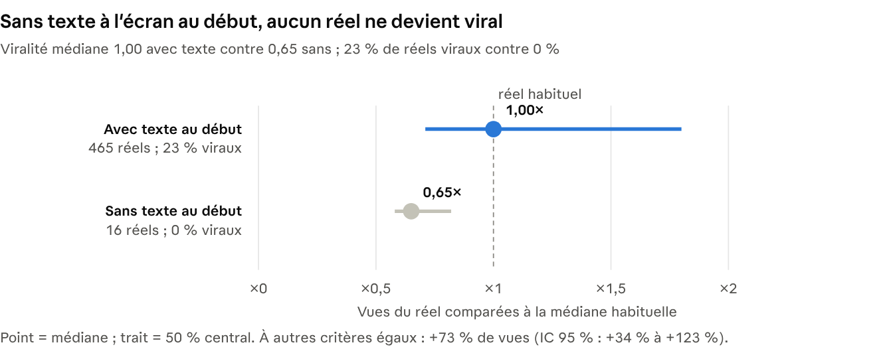
Hypothèse H2Sous-titrer ses vidéos parlées aide-t-il à toucher plus de monde, qu'elle parle face caméra ou en voix off ?
Significatif
-
Question marketing. Sous-titrer ses vidéos parlées aide-t-il à toucher plus de monde, qu'elle parle face caméra ou en voix off ?
-
Question de recherche. Les réels sous-titrés (n = 213) ont-ils plus de viralité (vues ÷ médiane des 30 réels publiés autour) que les réels non sous-titrés (n = 152) ?
-
Hypothèse. H0 : en moyenne, les réels sous-titrés ont la même viralité que les réels non sous-titrés ; les sous-titres ne changent rien. H1 : en moyenne, les réels sous-titrés n'ont pas la même viralité que les réels non sous-titrés. Si p < 0,05, on rejette H0 et on retient H1.
-
Périmètre. 365 réels publiés du 01/01/2025 au 21/10/2026 : 213 sous-titrés, 152 non sous-titrés. Le critère « sous-titrés » = colonne « Sous-titres » de la base (oui / non). Le périmètre ne garde que les réels où elle parle (au moins 15 mots transcrits). L'indicateur est la viralité (vues ÷ médiane des 30 réels publiés autour). 1,00 = un réel normal ; 2,00 = deux fois plus de vues que d'habitude. Source : reels_base_completee.xlsx (« BDD Nettoyé » de l'équipe, 487 réels du 01/01/2025 au 21/10/2026). Exclus : 122 réels où elle ne parle pas (moins de 15 mots transcrits).
-
Test choisi. 213 réels sous-titrés contre 152 réels non sous-titrés : deux groupes indépendants et une variable quantitative (viralité, passée au logarithme car très asymétrique : asymétrie = 9,97), donc test t pour échantillons indépendants. Levene : F = 1,02 ; p = 0,314 → variances égales, ligne « variances égales » retenue. Résultat confirmé par le test de Mann-Whitney, car la distribution reste asymétrique après le logarithme (asymétrie = 1,54 ; aplatissement = 2,45) : ce test ne suppose aucune forme de distribution.
-
Le résultat. 0,42 en moyenne pour les réels sous-titrés contre 0,13 pour les réels non sous-titrés, en ln de la viralité, soit 1,53 contre 1,14 à l'échelle d'origine (t = 2,62 ; ddl = 363 ; p = 0,009). En médiane, 1,09 contre 0,85, soit 0,24 (IC 95 % : 0,05 à 0,47) ; Mann-Whitney p < 0,001. Verdict : significatif, H1 validée.
Statistiques de groupe (ln de la viralité)
| Sous-titres | N | Moyenne | Écart type | Erreur standard de la moyenne | Médiane |
|---|---|---|---|---|---|
| Oui | 213 | 0,42 | 1,08 | 0,074 | 0,09 |
| Non | 152 | 0,13 | 1,02 | 0,083 | −0,17 |
Test des échantillons indépendants (ln de la viralité)
| Hypothèse | t | ddl | p unilatéral | p bilatéral | Différence moyenne | Erreur standard | IC 95 % inférieur | IC 95 % supérieur |
|---|---|---|---|---|---|---|---|---|
| Hypothèse de variances égales | 2,615 | 363 | 0,005 | 0,009 | 0,293 | 0,112 | 0,073 | 0,513 |
| Hypothèse de variances inégales | 2,637 | 334,78 | 0,004 | 0,009 | 0,293 | 0,111 | 0,074 | 0,511 |
-
Interprétation. Les réels sous-titrés ont une viralité médiane de 1,09 contre 0,85 pour les réels non sous-titrés (1,00 = un réel normal), soit 29 % de plus.
-
Décision. Sous-titrer systématiquement les réels où elle parle, dès la prochaine publication. Ce qui la ferait changer : un test refait sur les réels publiés après le 21/10/2026 qui donnerait p ≥ 0,05 ou un écart de sens opposé.
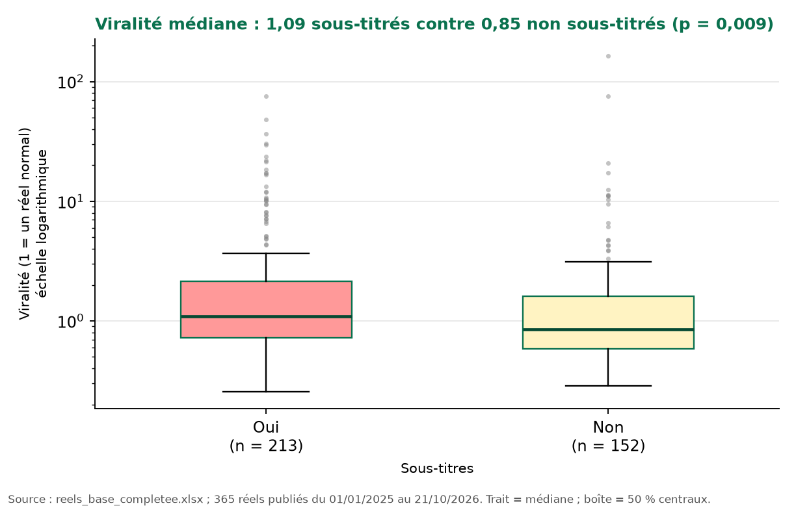
La valeur de p (p = 0,009) est la probabilité d'observer un écart au moins aussi grand que celui-ci si les sous-titres ne changeaient rien ; sous 0,05, on juge l'écart trop grand pour être dû au hasard.
C'est significatif.
Hypothèse H4Demander de commenter, de partager ou de s'abonner à l'oral, dans une vidéo sous-titrée, fait-il réagir davantage le public ?
Non significatif
-
Question marketing. Demander de commenter, de partager ou de s'abonner à l'oral, dans une vidéo sous-titrée, fait-il réagir davantage le public ?
-
Question de recherche. Les réels qui demandent un geste à l'oral (commenter, partager, s'abonner…) et sont sous-titrés (n = 31) ont-ils plus d'interactions (commentaires + partages pour 1 000 comptes touchés) que les réels sans aucun appel à l'action (n = 376) ?
-
Hypothèse. H0 : en moyenne, les réels qui demandent un geste à l'oral (commenter, partager, s'abonner…) et sont sous-titrés ont les mêmes interactions que les réels sans aucun appel à l'action ; la demande d'un geste à l'oral dans un réel sous-titré ne change rien. H1 : en moyenne, les réels qui demandent un geste à l'oral (commenter, partager, s'abonner…) et sont sous-titrés n'ont pas les mêmes interactions que les réels sans aucun appel à l'action. Si p < 0,05, on rejette H0 et on retient H1.
-
Périmètre. 407 réels publiés du 03/01/2025 au 20/10/2026 : 31 avec appel oral sous-titré, 376 sans appel. Le critère « demande d'un geste à l'oral, réel sous-titré » = un appel à l'action à l'oral qui demande de commenter, partager, s'abonner, enregistrer ou identifier, sans renvoi vers le site (ni à l'oral ni en légende), dans un réel qui a des sous-titres. Le groupe de comparaison = réels sans aucun appel à l'action, ni écrit ni oral. L'indicateur est le nombre d'interactions (commentaires + partages pour 1 000 comptes touchés). Source : reels_base_completee.xlsx (« BDD Nettoyé » de l'équipe, 487 réels du 01/01/2025 au 21/10/2026). Exclus : 4 réels sans appel à l'action en légende dont l'appel oral est vide dans la base. Exclus : 39 réels dont un appel renvoie vers le site (hors des deux groupes). Exclus : 37 réels avec un autre appel à l'action (un appel à l'oral sans sous-titres, ou un appel seulement en légende), hors des deux groupes.
-
Test choisi. 31 réels avec appel oral sous-titré contre 376 réels sans appel : deux groupes indépendants et une variable quantitative (interactions, passée au logarithme car très asymétrique : asymétrie = 3,13 ; ln(1 + x) car 2 réels n'ont aucune interaction), donc test t pour échantillons indépendants. Levene : F = 4,26 ; p = 0,040 → variances inégales, ligne « variances inégales » (Welch) retenue. Résultat confirmé par le test de Mann-Whitney, car la distribution était très asymétrique avant le logarithme (asymétrie = 3,13) : ce test ne suppose aucune forme de distribution.
-
Le résultat. 1,50 en moyenne pour les réels qui demandent un geste à l'oral (commenter, partager, s'abonner…) et sont sous-titrés contre 1,26 pour les réels sans aucun appel à l'action, en ln(1 + interactions), soit 3,48 contre 2,53 à l'échelle d'origine (t = 1,57 ; ddl = 32,94 ; p = 0,125). En médiane, 3,30 contre 2,34, soit 0,96 (IC 95 % : −0,39 à 3,35) ; Mann-Whitney p = 0,143. Verdict : non significatif, H0 conservée.
Statistiques de groupe (ln(1 + interactions))
| Demande d'un geste à l'oral (réel sous-titré) | N | Moyenne | Écart type | Erreur standard de la moyenne | Médiane |
|---|---|---|---|---|---|
| Oui | 31 | 1,50 | 0,82 | 0,148 | 1,46 |
| Non | 376 | 1,26 | 0,63 | 0,032 | 1,21 |
Test des échantillons indépendants (ln(1 + interactions))
| Hypothèse | t | ddl | p unilatéral | p bilatéral | Différence moyenne | Erreur standard | IC 95 % inférieur | IC 95 % supérieur |
|---|---|---|---|---|---|---|---|---|
| Hypothèse de variances égales | 1,978 | 405 | 0,024 | 0,049 | 0,238 | 0,121 | 0,001 | 0,476 |
| Hypothèse de variances inégales | 1,573 | 32,94 | 0,063 | 0,125 | 0,238 | 0,152 | −0,070 | 0,547 |
-
Interprétation. Les réels qui demandent un geste à l'oral (commenter, partager, s'abonner…) et sont sous-titrés obtiennent en médiane 3,30 interactions pour 1 000 comptes touchés contre 2,34 pour les réels sans aucun appel à l'action, soit 41 % de plus, mais cet écart reste compatible avec le hasard : on ne peut pas affirmer que la demande d'un geste à l'oral dans un réel sous-titré change les interactions.
-
Décision. Ne pas compter sur une demande de geste à l'oral dans un réel sous-titré pour faire réagir davantage : un effet n'est pas démontré. Ce qui la ferait changer : un test refait sur les réels publiés après le 21/10/2026 qui donnerait p < 0,05.
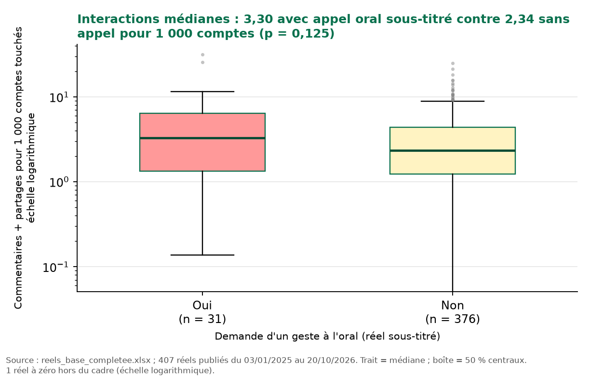
La valeur de p (p = 0,125) est la probabilité d'observer un écart au moins aussi grand que celui-ci si la demande d'un geste à l'oral dans un réel sous-titré ne changeait rien ; sous 0,05, on juge l'écart trop grand pour être dû au hasard.
Ce n'est pas significatif.
Hypothèse H6Faut-il faire des reels plus longs pour avoir plus de vues ?
Non significatif
-
Question marketing. Faut-il faire des reels plus longs pour avoir plus de vues ?
-
Question de recherche. Les reels longs (n = 243) ont-ils plus de vues que les reels courts (n = 244) ?
-
Hypothèse. H0 : en moyenne, les reels longs ont le même nombre de vues que les reels courts ; la durée ne change rien. H1 : en moyenne, les reels longs n'ont pas le même nombre de vues que les reels courts. Si p < 0,05, on rejette H0 et on retient H1.
-
Périmètre. 487 reels publiés du 01/01/2025 au 21/10/2026 : 243 longs, 244 courts. Un reel est long si sa durée dépasse la médiane de l'ensemble (37,7 s), court sinon. Source : reels_base_completee.xlsx (colonnes « Durée (secondes) » et « Vues »). Aucun reel exclu ; la durée, écrite avec une virgule comme du texte, a été convertie en vrai nombre pour pouvoir calculer. La base des ventes n'intervient pas : H6 porte sur les vues.
-
Test choisi. 243 reels longs contre 244 reels courts : deux groupes indépendants et une variable quantitative (vues), donc test t pour échantillons indépendants. Levene : F = 0,37 ; p = 0,544 → variances égales, ligne « variances égales » retenue. Résultat confirmé par Mann-Whitney, car les vues sont très asymétriques (quelques reels viraux, jusqu'à 2 642 301 vues) : la moyenne est fragile, le test de rang non.
-
Le test t (le plus simple pour comparer deux tas) compare la moyenne des deux tas. « Indépendants » veut dire qu'une vidéo est dans un seul tas, jamais dans les deux. Pourquoi lui : on compare exactement deux tas, et les vues sont des nombres. Un test plus compliqué ne serait utile que s'il y avait plus de deux tas.
-
Levene n'est pas un test de plus pour la conclusion : c'est une petite vérification obligatoire avant de lire le test t. Il regarde si, dans les deux tas, les vidéos sont aussi « étalées » (certaines toutes petites, d'autres énormes). Oui (p = 0,544, plus grand que 0,05), donc on lit la ligne « variances égales », la plus simple.
-
Mann-Whitney est le seul test plus compliqué qu'on ajoute, et on a une bonne raison : les vues sont très inégales (une vidéo à 2,6 millions, la plupart autour de 15 000). Quelques vidéos géantes peuvent fausser une moyenne, comme un seul enfant très grand fausse la taille moyenne d'un groupe. Mann-Whitney met les vidéos en rang et regarde de quel tas viennent les premières : une vidéo à 2,6 millions ne gagne qu'une place de plus qu'une à 100 000. Il sert de deuxième avis.
Peut-on se fier au résultat ? Oui : 243 et 244 vidéos par tas (assez), chaque vidéo dans un seul tas, et les deux arbitres disent la même chose. On n'a pas ajouté d'autre test : il n'y en avait pas besoin.
- Le résultat. 51 565 vues en moyenne pour les reels longs contre 46 792 pour les reels courts (t = 0,33 ; ddl = 485 ; p = 0,744). En médiane, 15 198 contre 15 418, soit un écart de -220 vues (IC 95 % : -2 343 à 2 360) ; Mann-Whitney p = 0,678. Verdict : non significatif, H0 conservée. Valeur de p : p = 0,744 veut dire que, si la durée ne changeait rien, on obtiendrait un écart au moins aussi grand par pur hasard dans environ 74 cas sur 100 ; comme p dépasse 0,05, l'écart n'est pas significatif.
Statistiques de groupe
| Reel long | N | Moyenne | Écart type | Erreur standard de la moyenne | Médiane |
|---|---|---|---|---|---|
| Oui | 243 | 51 565 | 135 929 | 8 720 | 15 198 |
| Non | 244 | 46 792 | 182 424 | 11 678 | 15 418 |
Test des échantillons indépendants
| Hypothèse | t | ddl | p unilatéral | p bilatéral | Différence moyenne | Erreur standard | IC 95 % inférieur | IC 95 % supérieur |
|---|---|---|---|---|---|---|---|---|
| Variances égales | 0,33 | 485 | 0,372 | 0,744 | 4 773 | 14 583 | -23 881 | 33 427 |
| Variances inégales | 0,33 | 449,3 | 0,372 | 0,743 | 4 773 | 14 575 | -23 870 | 33 416 |
-
Interprétation. Un reel fait environ 15 400 vues (médiane), qu'il soit long ou court : l'écart de médiane (220 vues) ne représente que 1,4 % de ce chiffre. Les 4 773 vues de moyenne en plus pour les reels longs viennent de quelques reels viraux et ne sont pas fiables.
-
Décision. Ne pas allonger les reels dans l'espoir d'obtenir plus de vues, à partir des prochaines publications. Ce qui la ferait changer : un nouveau test sur les reels à venir où les reels longs auraient une médiane de vues significativement supérieure (p < 0,05).
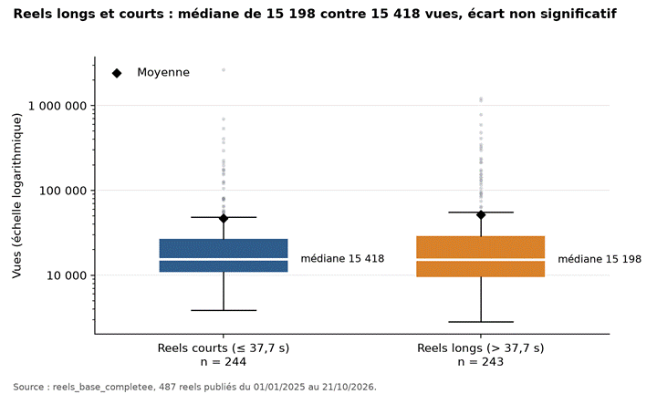
Diffusion du réel
Hypothèse H15Fréquence de publication : Faut-il publier plus de réels pour gagner plus de vues, d'abonnés et d'engagement ?
Significatif en partie
-
Question de recherche. Quand elle publie plus de réels dans une semaine, gagne-t-elle plus de vues, plus d'abonnés et/ou plus d'engagement, sur la semaine et par réel ?
-
Hypothèse. H0 : le nombre de réels publiés dans la semaine n'est lié ni aux vues, ni aux abonnés, ni au taux d'engagement. H1 : il est lié à au moins un de ces KPI. Si p < 0,05, le lien n'est pas dû au hasard : on rejette H0.
-
Périmètre. 94 semaines, de janvier 2025 à octobre 2026 ; 481 réels ; 5 réels par semaine en médiane (de 1 à 9). Semaines classées en 5 groupes : 3 réels ou moins (12 semaines), 4 (19), 5 (27), 6 (22), 7 ou plus (14). Base complète : abonnés des 32 réels de septembre-octobre 2026 complétés par l'export Instagram.
-
Test choisi. Deux niveaux d'analyse pour chaque KPI. Sur la semaine : on cherche un lien entre deux nombres (réels publiés, total de la semaine), donc une corrélation de Pearson, confirmée par Spearman. Par réel : on compare les réels des 5 groupes de semaines, donc Kruskal-Wallis (plus de deux groupes, KPI asymétriques), et une corrélation de Spearman pour voir si la baisse est régulière.
-
Calcul de p. La corrélation r va de −1 (plus elle publie, moins elle gagne) à +1 (plus elle publie, plus elle gagne) ; 0 = aucun lien. Sur la semaine : vues r = 0,15 (p = 0,16), abonnés r = 0,04 (p = 0,71), engagement r = −0,02 (p = 0,86) : dans les trois cas, plus de 15 chances sur 100 que le petit lien observé soit dû au hasard. Par réel : abonnés p = 0,003 (Kruskal-Wallis), soit 3 chances sur 1 000, avec une baisse régulière (Spearman p < 0,001) ; vues p = 0,016 mais sans tendance régulière (Spearman p = 0,10) ; engagement p = 0,10.
-
Significativité. La règle : si p est sous 0,05, le résultat est significatif. Sur la semaine, aucun KPI ne passe : publier plus ne fait gagner ni plus de vues, ni plus d'abonnés, ni plus d'engagement (non significatif). Par réel, seuls les abonnés passent nettement (0,003) : significatif, chaque réel rapporte moins d'abonnés. Pour les vues par réel, les groupes diffèrent (p = 0,016) mais dans le désordre, sans lien avec le rythme de publication : pas d'effet de la fréquence.
-
Le résultat.
-
Vues de la semaine : 68 000 (3 réels ou moins), 210 000 (4), 87 000 (5), 138 000 (6), 128 000 (7 ou plus). Aucun lien.
-
Abonnés de la semaine : 49, 192, 52, 80, 49. Aucun lien.
-
Engagement : 4,0 %, 3,9 %, 3,4 %, 3,6 %, 3,6 % sur la semaine ; entre 3,3 % et 4,1 % par réel. Aucun lien.
-
Abonnés par réel : 12, 8, 7, 6 puis 4,5. Significatif, baisse régulière.
-
Verdict : on ne rejette pas H0 pour les vues, l'engagement et les abonnés de la semaine ; on la rejette pour les abonnés par réel.
-
Interprétation. En clair, publier plus ne rapporte rien de plus : qu'elle publie 3 ou 7 réels dans la semaine, elle fait à peu près autant de vues, gagne à peu près autant d'abonnés et garde le même taux d'engagement. Le volume de la semaine se répartit simplement sur plus de réels : chaque réel rapporte donc moins d'abonnés, 12 les semaines calmes contre 4 à 5 les semaines chargées. C'est le signe d'une saturation de l'audience : les abonnés et l'algorithme ne consomment pas plus de contenu parce qu'elle en produit plus. Réserve : c'est une corrélation, pas une preuve de cause à effet.
-
Décision. Concrètement, publier moins mais mieux : passer d'environ 6 à 4 réels par semaine, soit une centaine de réels en moins par an, sans perte de vues, d'abonnés ni d'engagement attendue. Le temps de production libéré sert à soigner chaque réel : musique, texte d'accroche, thèmes qui recrutent, créneau du matin ou de midi. On le valide sur 8 semaines à 4 réels, en suivant les trois KPI.
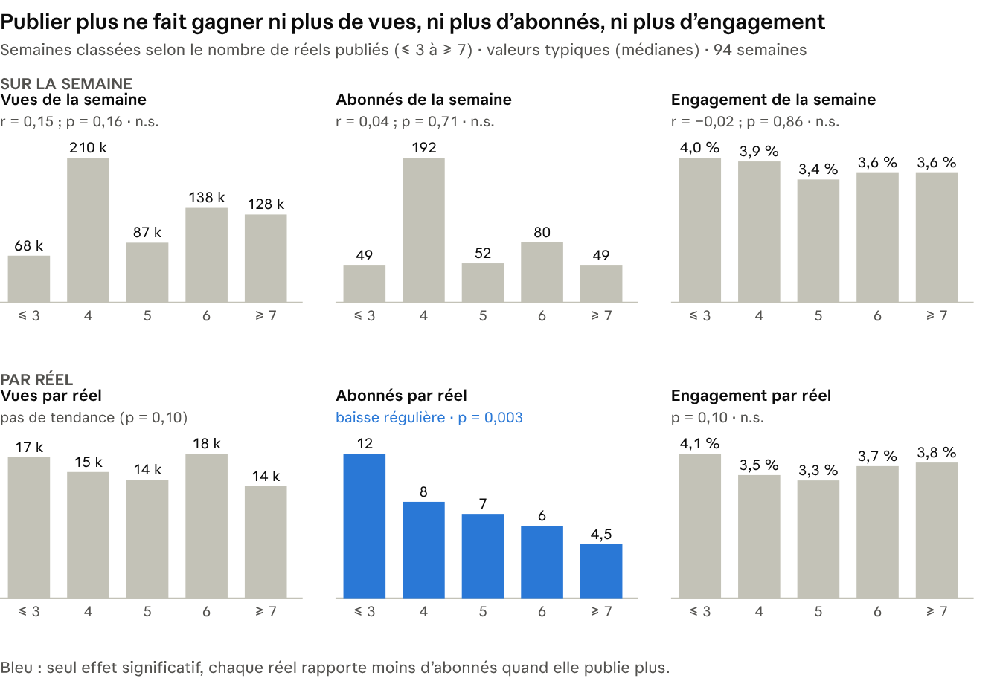
reels_base.csv · 94 semaines, janvier 2025 – octobre 2026
Hypothèse H16À quelle heure publier ses réels ?
Significatif
-
Question de recherche. Les réels publiés le matin, à midi, l'après-midi ou le soir obtiennent-ils un nombre de vues différent ?
-
Hypothèse. H0 : l'heure ne change rien, les 4 créneaux font autant de vues. H1 : au moins un créneau fait plus ou moins de vues. Si p < 0,05, l'écart n'est pas dû au hasard : on rejette H0.
-
Périmètre. Les 481 réels, répartis dans les 4 créneaux.
-
Test choisi. On compare plus de deux groupes (4 créneaux) sur un nombre, avec quelques réels très viraux qui faussent les moyennes : Kruskal-Wallis, l'équivalent de Mann-Whitney pour plusieurs groupes. Comme il trouve un écart, on compare ensuite les créneaux deux à deux (Mann-Whitney), en corrigeant les p car cela fait 6 comparaisons.
-
Calcul de p. Kruskal-Wallis range les 481 réels du moins vu au plus vu, puis regarde si certains créneaux se retrouvent plus souvent en haut ou en bas du classement que si l'heure ne jouait aucun rôle. Résultat : H = 10,2 ; p = 0,017, soit environ 2 chances sur 100 que ce soit le hasard. Deux à deux : matin contre soir p = 0,006 et midi contre soir p = 0,005, soit p corrigée = 0,017 pour les deux. Les autres paires ne diffèrent pas.
-
Significativité. La règle : si p est sous 0,05, le résultat est significatif. Ici, p = 0,017 : significatif. Les comparaisons deux à deux montrent d'où vient l'écart : le matin et le midi font significativement plus de vues que le soir.
-
Le résultat. Vues d'un réel typique : 17 174 le matin, 16 286 à midi, 13 292 l'après-midi, 12 357 le soir, soit +39 % le matin et +32 % à midi par rapport au soir. Verdict : on rejette H0, le matin et le midi font plus de vues que le soir.
-
Interprétation. En clair, un réel publié le matin ou à midi génère environ un tiers de reach en plus qu'un réel publié le soir : autour de 17 000 et 16 000 vues, contre 12 000. L'explication la plus probable tient au fonctionnement de l'algorithme des Reels : un réel est d'abord poussé auprès d'un premier échantillon d'abonnés et de non-abonnés, et ses signaux précoces (watch time, taux de complétion, partages, enregistrements dans les premières heures) décident s'il est ensuite diffusé plus largement dans l'onglet Reels et l'Explorer. Publié le matin ou à midi, au moment des pics d'activité de l'audience (trajet, pause déjeuner), le réel accumule ces signaux vite et dispose de toute la journée pour être redistribué. Le soir, il arrive dans un fil plus saturé et sa fenêtre de diffusion initiale est coupée par la nuit. Elle publie déjà 7 réels sur 10 sur ces créneaux. Réserve : c'est une corrélation, les réels du soir peuvent aussi être des contenus différents.
-
Décision. Concrètement, continuer à publier sur les deux créneaux qui marchent déjà : vers 8 h, avant le travail, et à la pause de midi. Ce sont les moments où l'audience fait défiler Instagram (trajet, pause déjeuner) : le réel accumule vite ses signaux précoces et a toute la journée pour être rediffusé.
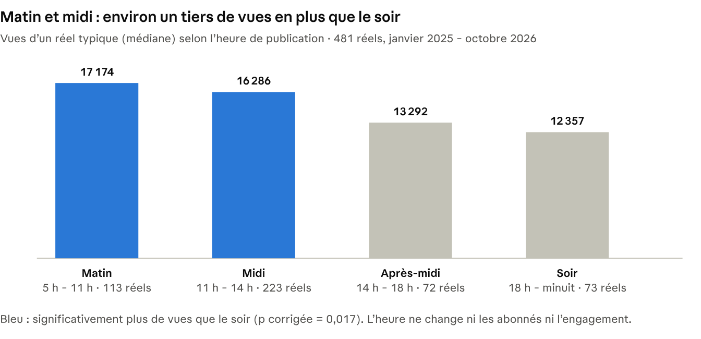
reels_base.csv · 481 réels, janvier 2025 – octobre 2026, classés par heure de publication
Hypothèse H1Écrire l'adresse du site ou un lien dans la légende freine-t-il la diffusion de la vidéo ?
Significatif
-
Question marketing. Écrire l'adresse du site ou un lien dans la légende freine-t-il la diffusion de la vidéo ?
-
Question de recherche. Les réels avec un lien vers le site dans la légende (n = 34) ont-ils moins de viralité (vues ÷ médiane des 30 réels publiés autour) que les réels sans lien vers le site dans la légende (n = 453) ?
-
Hypothèse. H0 : en moyenne, les réels avec un lien vers le site dans la légende ont la même viralité que les réels sans lien vers le site dans la légende ; le lien vers le site dans la légende ne change rien. H1 : en moyenne, les réels avec un lien vers le site dans la légende n'ont pas la même viralité que les réels sans lien vers le site dans la légende. Si p < 0,05, on rejette H0 et on retient H1.
-
Périmètre. 487 réels publiés du 01/01/2025 au 21/10/2026 : 34 avec lien, 453 sans lien. Le critère « lien vers le site » = la légende contient « lumineva.shop », « lien », « site », « bio » ou « boutique » dans les mots trouvés de l'appel à l'action en description. Le groupe de comparaison = tous les autres réels de la base (sans lien vers le site dans la légende). L'indicateur est la viralité (vues ÷ médiane des 30 réels publiés autour). 1,00 = un réel normal ; 2,00 = deux fois plus de vues que d'habitude. Source : reels_base_completee.xlsx (« BDD Nettoyé » de l'équipe, 487 réels du 01/01/2025 au 21/10/2026). Aucun réel exclu : les 487 réels de la base sont répartis entre les deux groupes.
-
Test choisi. 34 réels avec lien contre 453 réels sans lien : deux groupes indépendants et une variable quantitative (viralité, passée au logarithme car très asymétrique : asymétrie = 11,04), donc test t pour échantillons indépendants. Levene : F = 6,22 ; p = 0,013 → variances inégales, ligne « variances inégales » (Welch) retenue. Résultat confirmé par le test de Mann-Whitney, car la distribution reste asymétrique après le logarithme (asymétrie = 1,56 ; aplatissement = 2,70) : ce test ne suppose aucune forme de distribution.
-
Le résultat. −0,07 en moyenne pour les réels avec un lien vers le site dans la légende contre 0,30 pour les réels sans lien vers le site dans la légende, en ln de la viralité, soit 0,94 contre 1,34 à l'échelle d'origine (t = −3,01 ; ddl = 46,70 ; p = 0,004). En médiane, 0,77 contre 1,01, soit −0,25 (IC 95 % : −0,38 à −0,03) ; Mann-Whitney p = 0,037. Verdict : significatif, H1 validée.
Statistiques de groupe (ln de la viralité)
| Lien du site dans la légende | N | Moyenne | Écart type | Erreur standard de la moyenne | Médiane |
|---|---|---|---|---|---|
| Oui | 34 | −0,07 | 0,64 | 0,110 | −0,27 |
| Non | 453 | 0,30 | 1,03 | 0,048 | 0,01 |
Test des échantillons indépendants (ln de la viralité)
| Hypothèse | t | ddl | p unilatéral | p bilatéral | Différence moyenne | Erreur standard | IC 95 % inférieur | IC 95 % supérieur |
|---|---|---|---|---|---|---|---|---|
| Hypothèse de variances égales | −2,025 | 485 | 0,022 | 0,043 | −0,363 | 0,179 | −0,714 | −0,011 |
| Hypothèse de variances inégales | −3,007 | 46,70 | 0,002 | 0,004 | −0,363 | 0,121 | −0,605 | −0,120 |
-
Interprétation. Les réels avec un lien vers le site dans la légende ont une viralité médiane de 0,77 contre 1,01 pour les réels sans lien vers le site dans la légende (1,00 = un réel normal), soit 24 % de moins.
-
Décision. Retirer l'adresse du site de la légende des réels, dès la prochaine publication. Ce qui la ferait changer : un test refait sur les réels publiés après le 21/10/2026 qui donnerait p ≥ 0,05 ou un écart de sens opposé.
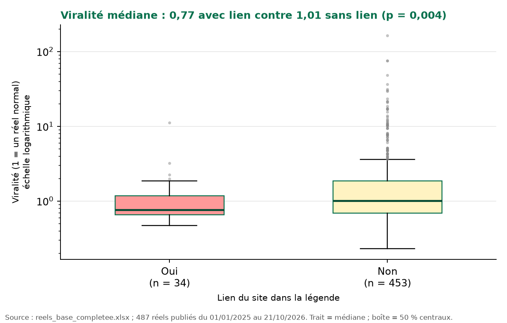
La valeur de p (p = 0,004) est la probabilité d'observer un écart au moins aussi grand que celui-ci si le lien vers le site dans la légende ne changeait rien ; sous 0,05, on juge l'écart trop grand pour être dû au hasard.
C'est significatif.
Hypothèse H5Demander de commenter, de partager ou de s'abonner dans la légende fait-il réagir davantage le public ?
Significatif
-
Question marketing. Demander de commenter, de partager ou de s'abonner dans la légende fait-il réagir davantage le public ?
-
Question de recherche. Les réels qui demandent un geste dans la légende (commenter, partager, s'abonner…) (n = 40) ont-ils plus d'interactions (commentaires + partages pour 1 000 comptes touchés) que les réels sans aucun appel à l'action (n = 376) ?
-
Hypothèse. H0 : en moyenne, les réels qui demandent un geste dans la légende (commenter, partager, s'abonner…) ont les mêmes interactions que les réels sans aucun appel à l'action ; la demande d'un geste dans la légende ne change rien. H1 : en moyenne, les réels qui demandent un geste dans la légende (commenter, partager, s'abonner…) n'ont pas les mêmes interactions que les réels sans aucun appel à l'action. Si p < 0,05, on rejette H0 et on retient H1.
-
Périmètre. 416 réels publiés du 03/01/2025 au 20/10/2026 : 40 avec appel en légende, 376 sans appel. Le critère « demande d'un geste en légende » = un appel à l'action dans la légende qui demande de commenter, partager, s'abonner, enregistrer ou identifier, sans renvoi vers le site (ni en légende ni à l'oral). Le groupe de comparaison = réels sans aucun appel à l'action, ni écrit ni oral. L'indicateur est le nombre d'interactions (commentaires + partages pour 1 000 comptes touchés). Source : reels_base_completee.xlsx (« BDD Nettoyé » de l'équipe, 487 réels du 01/01/2025 au 21/10/2026). Exclus : 4 réels sans appel à l'action en légende dont l'appel oral est vide dans la base. Exclus : 39 réels dont un appel renvoie vers le site (hors des deux groupes). Exclus : 28 réels avec un autre appel à l'action (un appel seulement à l'oral), hors des deux groupes.
-
Test choisi. 40 réels avec appel en légende contre 376 réels sans appel : deux groupes indépendants et une variable quantitative (interactions, passée au logarithme car très asymétrique : asymétrie = 2,24 ; ln(1 + x) car 2 réels n'ont aucune interaction), donc test t pour échantillons indépendants. Levene : F = 0,22 ; p = 0,637 → variances égales, ligne « variances égales » retenue. Résultat confirmé par le test de Mann-Whitney, car la distribution était très asymétrique avant le logarithme (asymétrie = 2,24) : ce test ne suppose aucune forme de distribution.
-
Le résultat. 1,68 en moyenne pour les réels qui demandent un geste dans la légende (commenter, partager, s'abonner…) contre 1,26 pour les réels sans aucun appel à l'action, en ln(1 + interactions), soit 4,36 contre 2,53 à l'échelle d'origine (t = 4,00 ; ddl = 414 ; p < 0,001). En médiane, 4,48 contre 2,34, soit 2,14 (IC 95 % : 0,78 à 3,76) ; Mann-Whitney p < 0,001. Verdict : significatif, H1 validée.
Statistiques de groupe (ln(1 + interactions))
| Demande d'un geste dans la légende | N | Moyenne | Écart type | Erreur standard de la moyenne | Médiane |
|---|---|---|---|---|---|
| Oui | 40 | 1,68 | 0,61 | 0,096 | 1,70 |
| Non | 376 | 1,26 | 0,63 | 0,032 | 1,21 |
Test des échantillons indépendants (ln(1 + interactions))
| Hypothèse | t | ddl | p unilatéral | p bilatéral | Différence moyenne | Erreur standard | IC 95 % inférieur | IC 95 % supérieur |
|---|---|---|---|---|---|---|---|---|
| Hypothèse de variances égales | 3,997 | 414 | < 0,001 | < 0,001 | 0,417 | 0,104 | 0,212 | 0,622 |
| Hypothèse de variances inégales | 4,096 | 48,25 | < 0,001 | < 0,001 | 0,417 | 0,102 | 0,212 | 0,621 |
-
Interprétation. Les réels qui demandent un geste dans la légende (commenter, partager, s'abonner…) obtiennent en médiane 4,48 interactions pour 1 000 comptes touchés contre 2,34 pour les réels sans aucun appel à l'action, soit 91 % de plus.
-
Décision. Demander de commenter, partager ou s'abonner dans la légende, dès la prochaine publication. Ce qui la ferait changer : un test refait sur les réels publiés après le 21/10/2026 qui donnerait p ≥ 0,05 ou un écart de sens opposé.
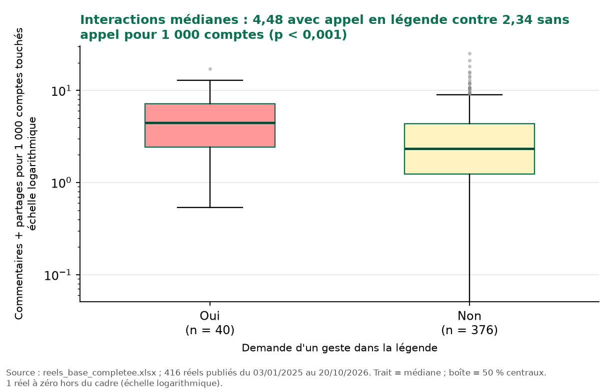
La valeur de p (p < 0,001) est la probabilité d'observer un écart au moins aussi grand que celui-ci si la demande d'un geste dans la légende ne changeait rien ; sous 0,05, on juge l'écart trop grand pour être dû au hasard.
C'est significatif.
Partie 2 — Comment faire un réel qui vend ?
Délai d'attribution des ventes
Le fichier des ventes ne dit pas d'où vient chaque commande : on fixe donc nous-mêmes le délai pendant lequel une vente est rattachée à un réel. Pour ne pas dépendre d'un seul choix, chaque test ventes est calculé sur 4 délais d'attribution :
| Délai | Fenêtre | Ce qu'il capte |
|---|---|---|
| 24 h | Jour J | L'effet immédiat, le jour de la publication |
| 48 h | J et J + 1 | La première vague de diffusion du réel |
| 72 h | J à J + 2 | La durée de vie principale d'un réel dans le fil |
| 7 jours | J à J + 6 | Les réels qui continuent d'être diffusés, notamment les réels viraux |
Hypothèse H17Code promo annoncé dans un réel fait-il vendre ?
Significatif en partie
-
Question de recherche. Quand un code promo est annoncé dans un réel, la part des commandes qui l'utilisent augmente-t-elle dans le délai d'attribution qui suit le réel ?
-
Hypothèse. H0 : la part des commandes avec le code est la même dans le délai qui suit le réel que sur les 28 jours d'après. H1 : elle est plus élevée juste après le réel. On teste H0 pour chacun des 4 délais (24 h, 48 h, 72 h, 7 jours).
-
Périmètre. Fichier nettoyé ventes_lumineva_propre.csv, colonne Discount Code ; 4 annonces de codes : SUMMER10 (réels des 27 et 29/06/2025, limité aux 10 premières commandes), CAMEDIT10 (22/11/2025, valable un seul jour), BIENVENUE10 (22/07 et 01/08/2025, code permanent). Le code partenaire B3-76CL9 est exclu.
-
Test choisi. Pour chaque délai, on compare deux pourcentages (commandes avec ou sans le code, dans le délai ou après) sur de petits nombres de commandes : test exact de Fisher sur un tableau 2 × 2.
-
Calcul de p. Fisher calcule la probabilité d'obtenir une répartition aussi déséquilibrée si le réel n'avait aucun effet. Pour SUMMER10 et CAMEDIT10, toutes les commandes avec le code tombent dans le délai et aucune après : p < 0,0001 sur les 4 délais, moins d'une chance sur 10 000. Pour BIENVENUE10 (22/07) : p = 0,03 à 24 h, 0,02 à 48 h, 0,08 à 72 h, 0,20 à 7 jours. Pour BIENVENUE10 (01/08) : p ≥ 0,44 sur tous les délais.
-
Significativité. La règle : si p est sous 0,05, le résultat est significatif. SUMMER10 et CAMEDIT10 : significatifs quel que soit le délai, résultat solide. BIENVENUE10 (22/07) : significatif à 24 h et 48 h seulement, résultat fragile. BIENVENUE10 (01/08) : jamais significatif.
-
Le résultat. Plus le délai est court, plus la part des commandes avec le code est forte, car tout se joue le jour même : les 12 commandes CAMEDIT10 représentent 75 % des commandes à 24 h, 46 % à 48 h, 39 % à 72 h et 24 % à 7 jours. Verdict : on rejette H0 pour les offres limitées, sur les 4 délais ; pour le code permanent, l'effet n'apparaît que sur 24 à 48 h et n'est pas robuste.
| Code | Réel(s) | Limite | Commandes avec le code après le réel | Les 28 jours suivants | p | Verdict |
|---|---|---|---|---|---|---|
| SUMMER10 | 27/06 et 29/06/2025 | 10 premières commandes | 10 sur 17 (59 %) | 0 sur 58 (0 %) | < 0,0001 | Significatif |
| CAMEDIT10 | 22/11/2025 | Valable le 22/11 uniquement | 12 sur 31 (39 %) | 0 sur 146 (0 %) | < 0,0001 | Significatif |
| BIENVENUE10 | 22/07/2025 | Aucune (code permanent) | 8 sur 11 (73 %) | 19 sur 44 (43 %) | 0,078 | Non |
| BIENVENUE10 | 01/08/2025 | Aucune (code permanent) | 2 sur 3 (67 %) | 17 sur 37 (46 %) | 0,462 | Non |
Résultat par délai d'attribution (commandes avec le code dans le délai ; p du test de Fisher contre les 28 jours suivants) :
| Code | 24 h | 48 h | 72 h | 7 jours |
|---|---|---|---|---|
| SUMMER10 | 10 sur 12 (83 %), p < 0,0001 | 10 sur 13 (77 %), p < 0,0001 | 10 sur 17 (59 %), p < 0,0001 | 10 sur 26 (38 %), p < 0,0001 |
| CAMEDIT10 | 12 sur 16 (75 %), p < 0,0001 | 12 sur 26 (46 %), p < 0,0001 | 12 sur 31 (39 %), p < 0,0001 | 12 sur 51 (24 %), p < 0,0001 |
| BIENVENUE10 (22/07) | 5 sur 5, p = 0,03 | 8 sur 9, p = 0,02 | 8 sur 11, p = 0,08 | 11 sur 18, p = 0,20 |
| BIENVENUE10 (01/08) | 1 sur 1, p = 0,47 | 2 sur 3, p = 0,46 | 2 sur 3, p = 0,46 | 6 sur 11, p = 0,44 |
-
Interprétation. En clair, une offre annoncée en réel fait vendre, à une condition : qu'il y ait de l'urgence. SUMMER10, limité aux 10 premières commandes, a été épuisé en 3 jours ; CAMEDIT10, valable une seule journée, a fait 12 commandes et 676 €. À l'inverse, BIENVENUE10, valable tout le temps, ne crée aucun pic : rien ne pousse à l'utiliser tout de suite. Le jour de CAMEDIT10, la boutique a fait 1 208 € au lieu des 653 € habituels : environ 555 € de plus pour 68 € de remise. Petite réserve : un code qui n'existe que dans le réel prouve que le réel touche des acheteuses, pas qu'il crée des ventes qui n'auraient jamais eu lieu.
-
Décision. Concrètement, lancer une offre limitée par mois annoncée en réel (valable 24 h, ou réservée aux X premières commandes), pendant 3 mois, avec un code unique par réel pour mesurer chaque opération. Si ça tient le rythme de CAMEDIT10, c'est environ 6 600 € de CA en plus par an pour 800 € de remise. On arrête si les ventes baissent les jours suivants, signe que l'offre ne fait qu'avancer des achats.
Hypothèse H18Dire ou montrer un parfum fait-il vendre ce parfum ?
Significatif en partie
-
Question de recherche. Quand un parfum apparaît dans un réel, se vend-il plus dans le délai d'attribution qui suit ? Et la façon de le présenter compte-t-elle : le dire à l'oral, le montrer ou l'écrire à l'écran, ou seulement l'écrire en description ?
-
Hypothèse. H0 : quelle que soit la façon de le présenter et le délai, le parfum se vend comme d'habitude (autant que l'attendent les 28 jours précédents). H1 : il se vend plus. On teste H0 pour chaque façon de le présenter et chacun des 4 délais.
-
Périmètre. Fichier nettoyé ventes_lumineva_propre.csv, commandes web du 23/06/2025 au 22/10/2026. 35 paires réel × parfum, avec un parfum déjà en vente avant le réel : 13 dits à l'oral (10 réels : Fleur d'oranger, Fleur de cerisier, Mangue, Éclipse de lune…), 15 montrés ou écrits à l'écran sans être dits, 7 seulement en description. Les parfums lancés le jour du réel sont exclus : ils n'ont pas de ventes habituelles auxquelles se comparer.
-
Test choisi. Chaque paire est comparée à elle-même : ventes du parfum dans le délai contre ventes attendues d'après les 28 jours précédents. C'est un test de Wilcoxon apparié (unilatéral : le réel fait-il vendre plus ?). Groupe témoin : dans les mêmes jours, on mesure aussi les ventes de tous les autres produits, pour vérifier que la hausse ne vient pas d'un pic général de la boutique.
-
Calcul de p. Dit à l'oral : p = 0,002 à 24 h, 48 h et 72 h, 0,04 à 7 jours, soit 2 chances sur 1 000 que l'écart soit dû au hasard dans les trois premiers jours. À l'écran seulement : p = 0,25 à 24 h, 0,08 à 48 h, 0,010 à 72 h, 0,06 à 7 jours. En description seulement : p ≥ 0,08 sur tous les délais.
-
Significativité. La règle : si p est sous 0,05, le résultat est significatif. Dit à l'oral : significatif sur les 4 délais. À l'écran seulement : significatif seulement à 72 h, donc effet plus faible et plus lent. En description seulement : jamais significatif (7 paires seulement).
-
Le résultat. Dit à l'oral, le parfum se vend 4 fois plus le jour même (22 ventes contre 5,4 attendues), 3,3 fois plus sur 48 h, 2,6 fois sur 72 h et encore 2,5 fois sur 7 jours. Montré ou écrit à l'écran sans être dit, il se vend environ 2 fois plus, avec un écart prouvé seulement à 72 h. Le témoin monte aussi un peu les jours où elle dit un parfum (autres produits × 1,6 à 24 h) : le réel attire du monde sur toute la boutique, mais le parfum cité monte bien plus, et l'écart entre les deux est prouvé le jour même (p = 0,04). Verdict : on rejette H0 pour le parfum dit à l'oral, sur les 4 délais ; à l'écran seulement, à 72 h ; pas en description seule.
Résultat par délai d'attribution :
| Façon de présenter le parfum | 24 h | 48 h | 72 h | 7 jours |
|---|---|---|---|---|
| Dit à l'oral (13 paires) | 22 contre 5,4 (× 4,1), p = 0,002 | 35 contre 10,7 (× 3,3), p = 0,002 | 42 contre 16,1 (× 2,6), p = 0,002 | 93 contre 37,5 (× 2,5), p = 0,04 |
| Montré ou écrit à l'écran seulement (15 paires) | 9 contre 4,3 (× 2,1), p = 0,25 | 18 contre 8,6 (× 2,1), p = 0,08 | 26 contre 12,9 (× 2,0), p = 0,010 | 52 contre 30,0 (× 1,7), p = 0,06 |
| En description seulement (7 paires) | 4 contre 1,5 (× 2,7), p = 0,47 | 9 contre 2,9 (× 3,1), p = 0,27 | 16 contre 4,4 (× 3,6), p = 0,08 | 30 contre 10,2 (× 2,9), p = 0,08 |
| Témoin : autres produits, mêmes jours que « dit à l'oral » | × 1,6, p = 0,004 | × 1,4, p = 0,009 | × 1,3, p = 0,03 | × 1,3, p = 0,23 |
| Écart parfum dit / témoin | p = 0,04 | p = 0,17 | p = 0,12 | p = 0,06 |
| Surplus de CA de la boutique (produit cité contre autres réels) | +61 € contre +14 €, p = 0,16 | +91 € contre +37 €, p = 0,20 | +135 € contre +26 €, p = 0,21 | +430 € contre +44 €, p = 0,34 |
-
Interprétation. Un parfum dit à l'oral se vend 4 fois plus le jour même, et l'écart tient une semaine. Simplement montré ou écrit à l'écran, il se vend environ 2 fois plus, avec un effet plus faible et plus lent. Écrit seulement en description, il ne bouge pas de façon prouvée (7 cas seulement). Le témoin montre que la hausse ne vient pas d'un simple pic de la boutique : le parfum nommé monte bien plus que le reste. Mais on ne peut pas attribuer ces ventes au seul réel. Un achat est rarement déclenché par un seul contact : c'est une accumulation (la cliente connaît la marque, a vu le parfum plusieurs fois, en a entendu parler, puis achète). Et sans pixel Meta (Test 10), on ne peut rien affirmer à 100%.
-
Décision. Concrètement, quand un réel doit mettre un parfum en avant, le nommer à voix haute, puis le reprendre en texte à l'écran et en description en renfort. Le montrer sans le dire ne suffit pas.
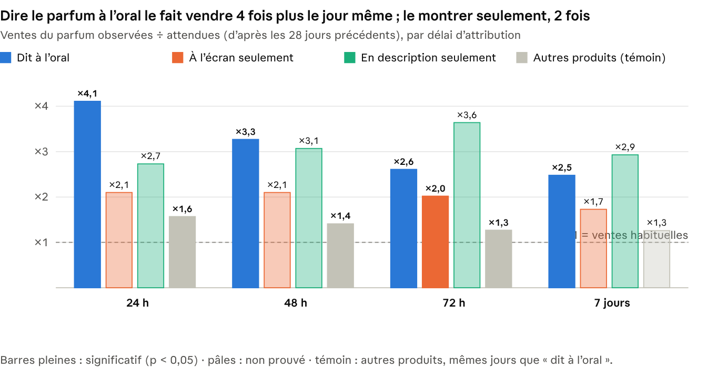
Hypothèse H19Un réel très viral amène-t-il des ventes ?
Non significatif
-
Question de recherche. Les ventes dépassent-elles davantage la tendance après un réel viral qu'après un réel non viral, et sur quel délai d'attribution ?
-
Hypothèse. H0 : quel que soit le délai, le surplus de ventes (CA, nouvelles clientes) est le même après un réel viral qu'après un réel non viral. H1 : il est plus élevé après un réel viral. On teste H0 pour chacun des 4 délais.
-
Périmètre. 346 réels de la période des ventes : 73 viraux (vues au moins 2 fois la médiane des 31 réels voisins, même définition que les Tests 1 à 3), 273 non viraux ; fichier nettoyé ventes_lumineva_propre.csv, commandes web du 23/06/2025 au 22/10/2026. Surplus = ventes du délai moins la moyenne des mêmes jours sur les 4 semaines précédentes.
-
Test choisi. Pour chaque délai, deux groupes séparés comparés sur un nombre (le surplus) : Mann-Whitney unilatéral (le réel viral fait-il vendre plus ?), car quelques semaines exceptionnelles tirent les moyennes, confirmé par un test t.
-
Calcul de p. Surplus de CA : p = 0,21 à 24 h, 0,18 à 48 h, 0,57 à 72 h, 0,20 à 7 jours. Surplus de nouvelles clientes : p = 0,21 ; 0,14 ; 0,33 ; 0,17. Le test t ne passe sous le seuil sur aucun délai non plus.
-
Significativité. La règle : si p est sous 0,05, le résultat est significatif. Aucun délai ne passe sous le seuil : non significatif.
-
Le résultat. Après un réel viral, la boutique vend un peu plus qu'après un réel ordinaire : +77 € contre +7 € le jour même, +295 € contre +15 € sur 7 jours, et +2,6 nouvelles clientes contre −0,1 sur 7 jours. Mais l'écart n'est jamais prouvé. Verdict : on ne rejette pas H0, sur aucun délai.
-
Complément : les réels très viraux. En ne gardant que les 25 réels à au moins 5 fois la médiane, l'écart se creuse sur 7 jours (+613 € de CA, +6,2 nouvelles clientes) et seul le surplus de nouvelles clientes à 7 jours passe le seuil (p = 0,03 ; CA p = 0,07). C'est un signal isolé, sur 25 réels : on le présente comme une tendance.
Résultat par délai d'attribution (73 réels viraux contre 273 non viraux ; p du test de Mann-Whitney unilatéral) :
| KPI | 24 h | 48 h | 72 h | 7 jours |
|---|---|---|---|---|
| Surplus de CA, viraux (2× la médiane) | +77 € contre +7 €, p = 0,21 | +147 € contre +30 €, p = 0,18 | +101 € contre +41 €, p = 0,57 | +295 € contre +15 €, p = 0,20 |
| Surplus de nouvelles clientes, viraux (2× la médiane) | +0,6 contre 0, p = 0,21 | +1,2 contre +0,1, p = 0,14 | +0,9 contre +0,2, p = 0,33 | +2,6 contre −0,1, p = 0,17 |
| Complément : surplus de CA, très viraux (5× la médiane, 25 réels) | +11 €, p = 0,24 | +118 €, p = 0,16 | +50 €, p = 0,43 | +613 €, p = 0,07 |
| Complément : surplus de nouvelles clientes, très viraux | +0,3, p = 0,24 | +1,5, p = 0,08 | +1,1, p = 0,21 | +6,2, p = 0,03 |
-
Interprétation. En clair, un réel viral ne fait pas vendre de façon prouvée : la boutique vend un peu plus après, surtout sur une semaine, mais l'écart n'est jamais significatif. Seuls les réels très viraux attirent un peu plus de nouvelles clientes sur 7 jours. Et surtout, on ne peut pas attribuer ces ventes au réel : le pixel Meta n'est pas installé sur la boutique Shopify, donc on ne sait pas si une commande vient d'une personne qui a vu le réel. On compare seulement les ventes de la boutique avant et après le réel : ça montre une tendance, pas une preuve. Si la viralité fait vendre, c'est donc de façon lente et indirecte : le réel touche surtout des inconnus, qui s'abonnent (Test 1), découvrent la marque, et achètent plus tard.
-
Décision. Concrètement, première action : installer le pixel Meta sur Shopify et mettre des liens tracés (UTM) en bio et en story. Sans ça, on ne pourra jamais dire quelle vente vient de quel réel. Ensuite, ne pas juger un réel viral sur ses ventes immédiates, mais sur 7 jours et sur les abonnés qu'il apporte, en suivant les commandes attribuées par le pixel.
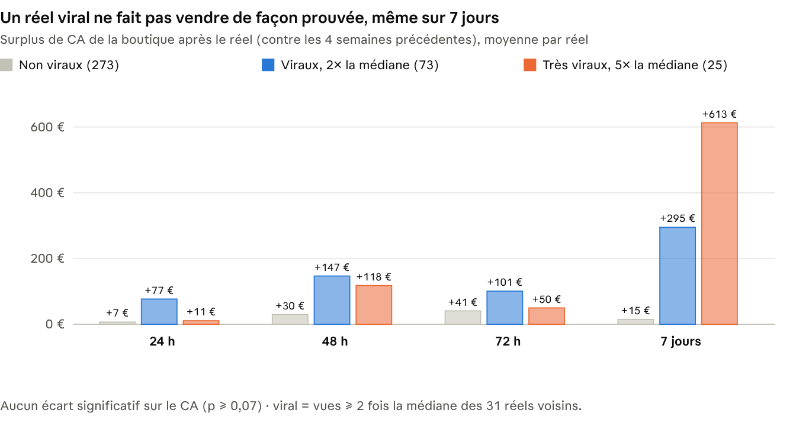
Hypothèse H7Un reel qui fait beaucoup réagir amène-t-il plus de ventes dans la semaine qui suit ?
Non significatif
-
Question marketing. Un reel qui fait beaucoup réagir amène-t-il plus de ventes dans la semaine qui suit ?
-
Question de recherche. Les reels qui font beaucoup réagir (n = 166) sont-ils suivis de plus de chiffre d'affaires de J+1 à J+7 que les reels qui font peu réagir (n = 166) ?
-
Hypothèse. H0 : en moyenne, les ventes de la semaine suivante sont les mêmes après un reel qui fait beaucoup réagir qu'après un reel qui fait peu réagir ; la réaction ne change rien. H1 : en moyenne, elles ne sont pas les mêmes. Si p < 0,05, on rejette H0 et on retient H1.
-
Périmètre. 332 reels publiés du 26/06/2025 au 13/10/2026 et disposant d'une semaine de ventes complète (boutique ouverte depuis le 27/06/2025, jours de fermeture exclus) : 166 qui font beaucoup réagir, 166 peu. Un reel fait beaucoup réagir si ses interactions (j'aime + commentaires + partages + enregistrements) pour 1 000 comptes touchés dépassent la médiane (38 pour 1 000). Ventes = chiffre d'affaires net des commandes web du jour J+1 au jour J+7, exprimé en écart à la médiane du mois (pour retirer la saison : Noël, rentrée). Sources : reels_base_completee.xlsx et ventes_lumineva_propre.csv.
-
Test choisi. 166 contre 166 : deux groupes indépendants et une variable quantitative (CA), donc test t pour échantillons indépendants. Levene : F = 0,00 ; p = 0,973 → variances égales, ligne « variances égales » retenue. Résultat confirmé par Mann-Whitney, car le chiffre d'affaires journalier est très asymétrique (asymétrie = 1,8) : quelques gros jours tirent la moyenne.
-
Le résultat. 505 € en moyenne pour les reels qui font beaucoup réagir contre 469 € pour ceux qui font peu réagir (t = 0,44 ; ddl = 330 ; p = 0,659). En médiane, 401 € contre 345 €, soit 56 € d'écart (IC 95 % : -102 à 200) ; Mann-Whitney p = 0,627. Verdict : non significatif, H0 conservée. Valeur de p : p = 0,659 veut dire que, si la réaction à un reel ne changeait rien aux ventes de la semaine suivante, on obtiendrait un écart au moins aussi grand par pur hasard dans environ 66 cas sur 100 ; comme p est supérieur à 0,05, l'écart est non significatif.
Statistiques de groupe
| Fait beaucoup réagir | N | Moyenne | Écart type | Erreur standard de la moyenne | Médiane |
|---|---|---|---|---|---|
| Oui | 166 | 505,28 | 766,38 | 59,48 | 400,56 |
| Non | 166 | 469,46 | 709,59 | 55,07 | 344,70 |
Test des échantillons indépendants
| Hypothèse | t | ddl | p unilatéral | p bilatéral | Différence moyenne | Erreur standard | IC 95 % inférieur | IC 95 % supérieur |
|---|---|---|---|---|---|---|---|---|
| Variances égales | 0,44 | 330 | 0,329 | 0,659 | 35,83 | 81,06 | -123,64 | 195,29 |
| Variances inégales | 0,44 | 328,1 | 0,329 | 0,659 | 35,83 | 81,06 | -123,64 | 195,30 |
-
Interprétation. Les ventes de la semaine suivante ne diffèrent pas selon que le reel fait beaucoup ou peu réagir : l'écart moyen de 36 € sur la semaine est du même ordre que la variation habituelle (écart type d'environ 766 €). Les semaines de ventes se chevauchent d'un reel à l'autre (elle publie presque chaque jour), et d'autres causes jouent (promotions, lancements) : ce test montre un lien éventuel, pas une cause.
-
Décision. Ne pas chercher à faire réagir dans le but de vendre plus dans la semaine ; juger les reels sur d'autres objectifs (vues, abonnés), à partir des prochaines publications. Ce qui la ferait changer : un nouveau test sur les prochains mois donnant p < 0,05, ou un lien net entre un reel précis et un pic de ventes.
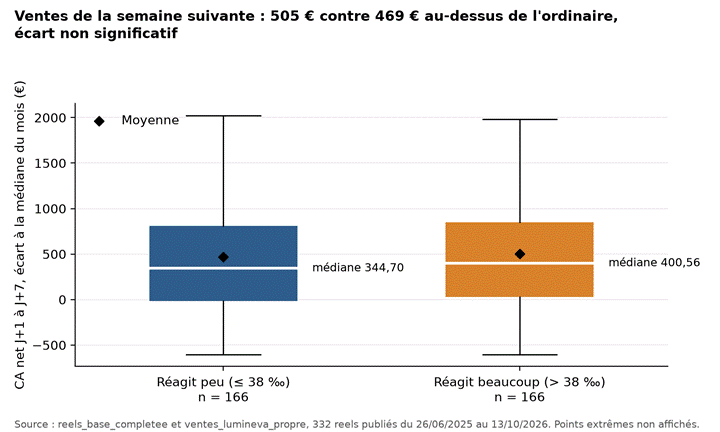